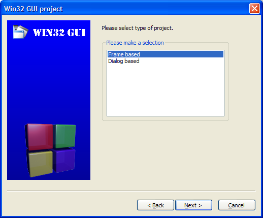
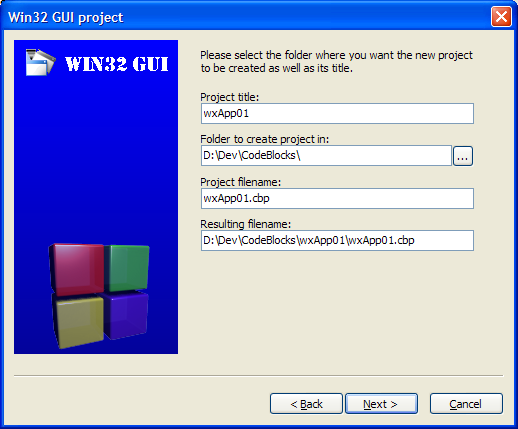
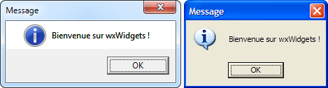
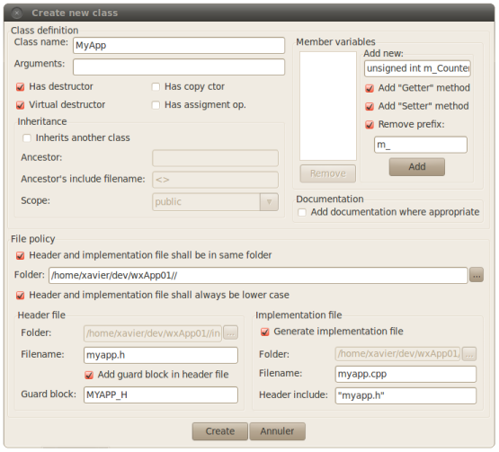

Bonjour à tous. Vous êtes nombreux à avoir découvert Qt par l'intermédiaire du cours de M@teo21. Je vous propose maintenant de découvrir une autre bibliothèque du même style : wxWidgets.
Avant de vous lancer tête baissée dans la programmation avec wxWidgets, voici dans un premier temps un peu de théorie à son sujet. La lecture de cette partie n'est pas indispensable, mais elle vous donnera un petit aperçu de ce dont est capable ce framework.
wxWidgets est, tout comme Qt, une bibliothèque multi-plateforme permettant à l'origine de créer des applications graphiques sous Windows et sous Unix, et ceci sans changer une ligne de code entre les deux OS. Son évolution en a fait un framework complet disponible désormais sous Windows, Linux, Unix, Mac, ainsi que certains OS pour appareils mobiles. La version principale a été développée pour être utilisée en C++, mais on trouve désormais de nombreux ports dans d'autres langages tels que Python, Perl, Ruby, Java, Lua. Il s'agit d'une bibliothèque open-source, dont la licence vous permet en gros d'en faire ce que vous voulez (applications open-source, propriétaires, avec ou sans modification du code source d'origine). Sa richesse apporte des outils permettant d'aborder la quasi-totalité des domaines utiles en programmation :
Contrôles principaux tels que menus, boutons, zones de texte et/ou de saisie (déroulantes ou non), cases à cocher, boutons radio, ...
Contrôles avancés tels que zones de liste, d' arborescence, onglets, barres d'outils, barres de progression, ...
Un système d'évènements très performant et simple à mettre en place que ce soit de façon statique (au moment de la saisie du code) ou dynamique (au moment de l'exécution du programme)
Un système de sizers permettant la mise en place et le redimensionnement automatique des contrôles sur une fenêtre
Le support de fonctionnalités avancées telles que le copier/coller, les fichiers de configuration (classiques ou xml), le multi-threading, l'impression, l'internationalisation, les réseaux, ...
Et bien d'autres encore...
Le meilleur moyen de vous rendre compte de la puissance de ce framework est à mon avis de vous en servir comme bibliothèque de développement, mais vous trouverez déjà à la fin de cette partie une liste de logiciels qui l'utilisent.
La bibliothèque wxWidgets a été créée en 1992 par Julian Smart, à l'université d'Édimbourg. Il s'agissait à l'origine de permettre la portabilité d'applications graphiques entre les systèmes Windows et Unix. C'est d'ailleurs de là qu'est tiré le nom d'origine de cette bibliothèque : wxWindows :
w pour Windows (le système d'exploitation de Microsoft)
x pour X (le serveur graphique des systèmes Unix)
Windows en référence aux fenêtres graphiques
Le nom wxWindows a été abandonné en 2004 au profit de wxWidgets, après de nombreux délibérés entre Julian Smart et Microsoft, pour éviter les conflits de marques. wxWidgets utilisait dans un premier temps la bibliothèque MFC sous Windows, et XView sous Unix (un framework créé par Sun Microsystems en 1988). Mais XView étant amené à disparaître, un port Motif a rapidement été écrit pour le remplacer. Ce fut ensuite au tour du port Windows d'être réécrit, suite aux nombreuses demandes des utilisateurs de Borland C++ pour obtenir une version sans les MFC (et donc, utilisant les API Windows). Une communauté très active se créa autour de wxWidgets, permettant la sortie des versions Mac et Xt. En 1997, l'arrivé de Gnome permet la création du port wxGTK. Depuis cette date, les différents ports ont été fusionnés pour ne former qu'une seule arborescence, et de nombreuses classes y ont été ajoutées, ne se limitant plus à l'interface graphique, mais à tous les aspecst d'une application. Comme Qt, wxWidgets est plus à considérer comme un framework complet, plutôt qu'une simple bibliothèque permettant de créer et gérer des fenêtres graphiques.
De nombreuses applications ont été développées avec wxWidgets, et il y a fort à parier que vous en utilisez régulièrement.
Le premier exemple que je citerai est Filezilla. Il s'agit d'un client ftp disponible sous la majorité des systèmes d'exploitation. Vous trouverez des captures d'écran prises sous Windows, Linux, Mac OS X sur cette page.
Ceux d'entre vous qui ont déjà créé des applications multi-langues (ou qui ont simplement participé à la traduction d'applications) ont sans doute entendu parler de poEdit, qui est un petit logiciel permettant la gestion de catalogues de traduction d'application et qui (sans quoi il n'apparaîtrait pas dans ce chapitre) a été développé avec wxWidgets. Voici quelques captures disponibles sur le site officiel.
DivFix++ est un utilitaire servant à réparer les fichier AVI endomagés. Il est disponible sous Windows, Mac et Linux
Amaya est un éditeur de pages web open-source fourni par le W3C et dont vous pourrez contempler quelques captures à cette adresse.
Audacity est un logiciel d'édition et d'enregistrement audio dont la renommée n'est plus à faire. En voici quelques captures d'écran.
En tant que développeur, vous utilisez peut-être (ou avez en tout cas entendu parler de ) Code::Blocks, un environnement de développement gratuit et open-source. La page screenshots du site officiel n'est malheureusement pas très remplie, mais elle permet déjà de voir l'application tourner sous windows et Linux.
Voilà, c'est terminé pour la partie théorique. Nous allons maintenant pouvoir passer aux choses sérieuses.
Le site officiel ne propose pas de version binaire pour Windows. En effet, du fait des différentes options disponibles au moment de la compilation, cela reviendrait à fournir une quantité phénoménale de fichiers à chaque nouvelle version. Il faut donc normalement passer par la compilation. Mais rassurez-vous : même si je vais vous expliquer comment faire, vous pourrez trouver sur le net plusieurs versions déjà compilées.
Cela fait maintenant plusieurs versions pour lesquelles je propose un installateur maison par l'intermédiaire de mon site wxDev.fr. La dernière version disponible est la 2.8.12.
Cet installateur vous permettra d'obtenir les fichiers de bibliothèque pour MinGW (et donc Code::Blocks), ainsi que pour Ms Visual C++ 2008 (Express ou non).
Il fonctionne un peu à la manière de l'installateur de MinGW : on télécharge un petit exécutable qui est la base de l'installateur, et ce dernier se chargera de récupérer les fichiers dont il a besoin en fonction des options que vous aurez sélectionnées. Vous pourrez également arrêter le processus d'installation après le téléchargement (et avant l'installation à proprement parler). Dans ce cas, les paquets téléchargés resteront dans le dossier de l'installateur, et il vous suffira de relancer l'exécutable pour que l'installation se fasse (dans ce cas, seuls les paquets téléchargés seront pré-sélectionnés pour l'installation).
Rendez-vous sur wxDev.fr, dans la partie Téléchargements. Vous y trouverez un lien permettant de télécharger L'installateur de libs de la dernière version. Comme cela est indiqué à côté du lien de téléchargement, n'exécutez pas directement cet installateur, mais enregistrez-le dans un dossier de votre choix. Lorsque le téléchargement est terminé, vous pouvez lancer l'exécution (attention si vous avez un pare-feu, car le programme a besoin d'un accès à internet pour télécharger les paquets de libs sélectionnés). Après une page d'accueil très classique, vous arrivez directement sur la page vous permettant de sélectionner les paquets à installer.
La page de sélection des différentes versions de libs à installer
Comme vous pouvez le constater sur la capture ci-dessus, par défaut, tous les paquets sont sélectionnés. Voici quelques explications concernant les paquets. Tout d'abord, cela paraît logique, mais je préfère quand même le signaler : il n'est pas nécessaire d'installer les libs pour un compilateur que vous ne possédez pas. Mais si vous utilisez aussi bien MinGW que Visual C++, ne vous gênez pas pour installer les deux versions. Ensuite, vous constaterez qu'il est possible d'installer une version Debug des libs. A moins que vous prévoyiez un apprentissage intensif, afin d'être en mesure de déboguer les libs elles-mêmes, vous pouvez décocher cette option (le fait de ne pas installer les libs Debug ne vous empêchera pas de pouvoir déboguer votre application de façon normale). D'autant plus que, vous le verrez, ces libs prennent énormément de place dans le dossier d'installation.
Vous avez également le choix entre les versions Dynamique et Statique. La version Dynamique se compose d'une ou plusieurs dll qu'il faudra bien entendu fournir avec votre application. A l'inverse, la version Statique permet d'intégrer les libs à votre exécutable (qui au passage va rapidement avoir une taille de plusieurs méga-octets).
Le choix suivant permet d'obtenir les version Ansi ou Unicode des libs. La version Ansi vous permettra une prise en main plus rapide, mais la version Unicode vous offrira une meilleure compatibilité avec d'autres OS. Vous pouvez de toute façon installer les deux versions sans problème (mais il faudra faire le choix au moment de la création de votre application).
Le dernier choix concerne les versions Monolithique et Multi-lib. Le version Monolithique est plus simple à utiliser (un seul fichier ".a" ou ".lib" à lier à votre exécutable, et une seule dll à fournir dans le cas de la version Dynamique), mais dans ce cas, vous utilisez à chaque fois la quasi-totalité du framework, même pour une petite application ne faisant qu'afficher une simple boite de dialogue. A l'inverse, la version Multi-lib vous permet de ne lier (et fournir) que la partie du framework que vous utilisez, mais en plusieurs fichiers (la base, les contrôles principaux, les contrôles avancés, le support réseau, html, ...). Pour cette option, je vous conseille de faire un choix maintenant, car il peut y avoir des conflits entre les deux versions.
Voici donc un petit récapitulatif des différentes versions :
MinGW / Ms Visual C++
Release / Debug
Dynamique / Statique
Ansi / Unicode
Monolithique / Multi-lib
Pour ma part, j'ai pris l'habitude d'utiliser les libs Unicode-Dynamique-Multi-libs en version Release (et sous Code::Blocks, donc compilées avec MinGW), mais c'est à vous de voir. Je vais bien entendu tenir compte des différentes possibilités dans la suite du tutoriel.
Lorsque vous avez sélectionné les paquets à installer, vous pouvez cliquer sur le bouton "Suivant".
La page de sélection du dossier d'installation
Cette étape vous permet, comme vous pouvez le voir, de sélectionner le dossier d'installation. Il n'y a rien de particulier à dire là dessus, si ce n'est que je vous déconseille d'utiliser un chemin contenant des espaces (certains compilateurs n'aiment pas cela du tout).
Nous arrivons ensuite à l'étape permettant de définir quelques options d'installation.
Choix des options d'installation
La première option (Ne pas créer d'entrée dans le menu Démarrer) permet de ne faire qu'une simple copie des fichiers sur le disque dur. Pour la désinstallation, il suffira purement et simplement de supprimer le dossier créé. A l'inverse, si cette option n'est pas sélectionnée, le menu Démarrer de Windows contiendra un dossier avec quelques liens et raccourcis utiles (fichiers d'aide, forums), ainsi qu'un raccourci pour la désinstallation (la désinstallation sera également disponible depuis le panneau de configuration, comme pour une application "normale").
La deuxième option (Ne pas créer ou modifier la variable système WXWIN) peut être cochée sans problème. Si ce n'est pas le cas, l'installateur va simplement stocker le chemin d'installation dans une variable système, afin de pouvoir l'utiliser lors de la création de l'application. Cela peut être utile si vous développez sur plusieurs ordinateurs : au lieu d'indiquer au compilateur que les fichiers include se trouvent par exemple dans le dossier C:\wxWidgets-2.8.12\include, puis sur un deuxième ordinateur, de devoir lui indiquer qu'ils se trouvent dans le même dossier, mais sur le disque D, vous lui indiquez tout simplement qu'ils se trouvent dans le dossier WXWIN\include, et le tour est joué.
La troisième option doit obligatoirement restée décochée si vous comptez utiliser les libs Dynamiques. Elle sert à ajouter le dossier contenant les dll à la liste des dossiers dans lesquels le système devra chercher pour les trouver.
Pour la dernière option, je vous en ai parlé plus haut : il peut y avoir des conflits entre les versions Monolithique et Multi-libs. Cela permet quand même d'installer les deux versions, en donnant une priorité à l'une des deux. Si, comme je vous l'ai conseillé précédemment, vous n'installez qu'une des deux versions, ne vous souciez pas de cette option.
L'étape suivante concerne le téléchargement et la vérification des paquets sélectionnés au début de ce chapitre.
La page de téléchargement des paquets à installer
Lorsque vous arrivez à cette étape pour la première fois, l'installateur attend que vous cliquiez sur le bouton Démarrer afin de commencer à télécharger les paquets nécessaires. Si, au contraire, vous aviez au préalable déjà effectué cette étape, des paquets (fichiers ".pck") peuvent être présents dans le dossier de l'installateur. Dans ce cas, l'arrivée à cette étape passe par une vérification de l'intégrité des fichiers avant de permettre le téléchargement des éventuels paquets manquants. Ce principe permet de dissocier les étapes de téléchargement et d'installation. Il permet également de pouvoir faire l'installation sur plusieurs ordinateurs sans avoir à re-télécharger les paquets à chaque fois. Autre point à signaler dans ce cas : si des paquets sont présents dans le dossier contenant l'installateur, seuls ceux-ci sont sélectionnés à la première étape.
Lorsque les téléchargements et les vérifications correspondantes sont terminés, vous pouvez passer à la suite de l'installation (copie des fichiers sur le disque dur, création éventuelle des entrées du menu Démarrer, ...). Gardez bien à l'esprit que si vous cliquez sur Annuler, les fichiers téléchargés ne seront pas effacés.
Voilà, la partie "Installation" est maintenant terminée.
Vous pouvez passer directement à la création de votre première application (mais vous pouvez également lire la partie "Compilation" si cette dernière vous intéresse).
Nous allons maintenant aborder la compilation des libs. Avec cette méthode, vous pourrez par la suite créer vos propres versions, en activant ou désactivant certaines options.
Installation des sources
Il faut dans un premier temps récupérer les fichiers sources à compiler.
Pour cela, rendez-vous sur le site officiel wxWidgets, dans la partie Téléchargements (Downloads pour les anglophobes) et récupérer l'archive nommée wxAll de la version stable actuelle (Current Stable Release).
Décompressez l'archive obtenue : comme pour la méthode précédente, évitez de décompressez cette archive dans un dossier dont le chemin contient des espaces car cela est très mal géré par certains compilateurs. A partir de maintenant, je désignerais le dossier obtenu par WXDIR. Afin d'être certains que l'on parle bien du même répertoire, celui-ci doit contenir les sous-dossiers art, build, contrib, demos, distrib, ....
Réglages des options
C'est maintenant que nous allons personnaliser notre version des libs. Avec votre éditeur de texte favori, ouvrez le fichier WXDIR\include\msw\setup.h (je vous conseille d'en faire une copie de sauvegarde, ne serait-ce que pour pouvoir vérifier quelles étaient les valeurs par défaut).
Nous ne modifierons pas grand chose pour l'instant. De plus, la majorité des options peuvent être spécifiées au moment de la compilation. Nous allons simplement activer le support OpenGL et ODBC afin de créer une version complète des libs. Pour cela, recherchez les variables wxUSE_GLCANVAS et wxUSE_ODBC, et passez leur valeur par défaut à 1.
Par exemple, pour wxUSE_GLCANVAS, remplacez la ligne
#define wxUSE_GLCANVAS 0
par
#define wxUSE_GLCANVAS 1
Lorsque cela est fait, enregistrez le fichier et fermez-le.
Les options générales de compilation
Si vous avez lu la partie concernant l'installateur maison, vous savez qu'il peut y avoir plusieurs versions des libs en fonction de certains paramètres. Si au contraire vous n'avez pas lu cette partie, il est indispensable que vous preniez connaissance des quelques explications situées entre les deux premières captures d'écran.
Vous devez donc maintenant savoir quelle version vous allez compiler, en fonction des paramètres suivants :
Release / Debug
Dynamique / Statique
Ansi / Unicode
Monolithique / Multi-lib
La compilation avec MinGW
Il vous faut bien entendu une installation fonctionnelle de MinGW. Pour vous en assurer, ouvrez une fenêtre de commandes (Démarrer ? Programmes ? Accessoires ? Invite de commandes) et entrez la commande :
mingw32-make.exe –version
Vous devez obtenir un message vous indiquant le numéro de version de MinGW. Si ce n’est pas le cas, je vous laisse le soin de revoir votre installation, en vous aidant des informations que vous pourrez trouver sur le site officiel de MinGW : http://mingw.org .
La compilation avec Ms Visual C++ 2008/2010
Pour ouvrir une fenêtre "Ms-Dos avec les variables d’environnement préréglées, il faut cliquer sur :
Démarrer, Tous les programmes, Visual C++ 2008 Express Edition, Visual Studio Tools, Invite de commandes de Visual Studio 2008 si vous utiliser la version 2008
Démarrer, Tous les programmes, Visual C++ 2010 Express, Invite de commandes de Visual Studio (2010) si vous utiliser la version 2010
.
C'est parti !
Ça y est, votre fenêtre Ms-Dos est prête ? Alors allons-y. Tout d'abord, placez-vous dans le dossier d'installation des sources (celui que j'appelle WXDIR). Chez moi, il s'agit du répertoire C:\wx28\.
cd C:\wx28
Ensuite, descendez dans les sous-dossiers jusqu'à celui contenant les fichiers Makefile :
cd build
cd msw
Vous constaterez que ce dossier contient un fichier Makefile pour chaque compilateur.
Pour MinGW, il s'agit du fichier makefile.gcc
Pour Visual C++, il s'agit du fichier makefile.vc
Il ne vous reste plus qu'à lancer le processus de compilation. Pour MinGW :
N'oubliez-pas de modifier les paramètres en fonction de vos choix.
Voilà, il ne vous reste maintenant plus qu'à patienter, car suivant les paramètres sélectionnés, la compilation peut prendre plus ou moins de temps. Il est à noter que la compilation en mode "SHARED=1" (version dynamique des libs) avec MinGW génère une multitude d’avertissements, mais il ne faut pas en tenir compte : c’est apparemment un problème connu sur les forums wxWidgets (pour info, je me suis amusé à rediriger ces avertissements vers un fichier texte, et il faisait au final près de 130 Mo).
Si, pour quelque raison que ce soit, vous ne désirez pas installer la version compilée que je vous propose un peu plus haut, et que vous ne voulez pas non plus compiler vos propres libs, voici d'autres solutions pour installer une version déjà compilée.
wxPack : un installateur complet
wxPack est une alternative à l'installateur que je vous propose au début de cette partie. Son principal inconvénient est qu'il vous oblige à télécharger l'ensemble des libs (comme si vous sélectionniez toutes les options disponibles avec mon installateur). Au final, l'exécutable obtenu pèse plus de 260 méga-octets, et le répertoire d'installation contient plusieurs giga-octets de données. Autre inconvénient : il s'écoule généralement un laps de temps assez long entre la publication d'une nouvelle version des sources wxWidgets et la version compilée par wxPack. Mais rassurez-vous : j'ai utilisé cette version pendant quelques temps avant de créer mon installateur, et tout fonctionne sans problème (je crois par contre me rappeler que le support OpenGL n'est pas présent). Si vous êtes intéressés : voici l'adresse du site de wxPack : http://wxpack.sourceforge.net/
Les DevPaks de FredCL
Pour les utilisateurs de Code::Blocks et Dev-C++, il y a la solution des DevPaks, qui sont des paquets contenant différentes bibliothèques destinées uniquement à MinGW. Vous trouverez sur le site de FredCL, Soft In The Box, différents DevPaks dont ceux contenant la dernière version wxWidgets. Voici en complément un petit tutoriel expliquant comment installer ces DevPaks manuellement pour Code::Blocks afin de les rendre compatibles avec l'Assistant Nouveau Projet wxWidgets de ce dernier.
Mais encore ?
On peut sans doute trouver d'autres solutions sur internet pour installer les libs wxWidgets. Si vous tombez par hasard sur quelque chose de sympa, n'hésitez-pas à m'en faire part, afin que je l'ajoute à ce tutoriel.
En attendant, vous pouvez passer à la suite, c'est à dire, créer (et surtout compiler) votre première application wxWidgets.
Sous Ubuntu, vous retrouverez les libs wxWidgets compilées dans les dépôts officiels. Il vous suffit donc, dans une fenêtre "Terminal", d'entrer la commande suivante :
sudo apt-get install libwxgtk2.8-dev wx-common
A noter que si vous utiliser Code::Blocks comme IDE, vous devez déjà avoir installé une partie des paquets nécessaires.
Il n'est cependant pas rare que la version disponible sous Ubuntu ne soit pas la dernière version. Si cet état de fait vous dérange, vous avez la possibilité d'installer la version disponible sur le dépôt wxWidgets. Pour cela, vous pouvez suivre la procédure d'installation de la rubrique suivante (il faudra juste penser à adapter le nom de code de votre distribution lors de la modification du fichier sources.list).
Sous Debian, il semblerai que la version disponible dans les dépôts officiels soit plus ou moins ancienne. Je vous conseille donc de passer par le dépôt officiel wxWidgets.
Pour cela, il faut ajouter l'adresse de ce dépôt à la fin du fichier /etc/apt/sources.list : deb http://apt.wxwidgets.org/ DIST-wx main
Dans la ligne ci-dessus, il faut remplacer le mot-clef "DIST" par le nom de code de votre distribution.
Par exemple, si vous êtes sous Debian 4.0 (nom de code "etch"), la ligne à ajouter devient : deb http://apt.wxwidgets.org/ etch-wx main
Et si vous êtes sous Debian 5.0 (nom de code "lenny"), la ligne est : deb http://apt.wxwidgets.org/ lenny-wx main
Il faut ensuite télécharger et installer la clef de vérification (avec les droits root) :
Vous pouvez bien entendu compiler vos propres fichiers, afin qu'ils répondent mieux à vos besoins et surtout qu'ils correspondent à votre système.
Installation des sources
Il faut dans un premier temps récupérer les fichiers sources à compiler.
Pour cela, rendez-vous sur le site officiel wxWidgets, dans la partie Téléchargements (Downloads pour les anglophobes) et récupérer l'archive nommée wxGTK de la version stable actuelle (Current Stable Release).
Placez cette archive dans votre dossier de développement habituel, et décompressez-la (clic droit, Extraire ici). Vous obtenez un dossier dont le nom est du style wxGTK.....
Ouvrez maintenant une fenêtre "Terminal", et placez-vous, à l'aide de la commande cd dans le dossier obtenu ci-dessus.
Il faut maintenant créer un dossier correspondant à la compilation que nous allons effectuer. De cette façon, il vous sera possible de tester différents paramètres de compilation sans que chaque version n'interfère avec les précédentes.
mkdir gtk-build-1
cd gtk-build-1
Comme la compilation de wxWidgets sous Linux est basée sur la bibliothèque gtk2, il faut vous assurer que les fichiers de développement de cette dernière soient bien installés :
sudo apt-get install libgtk2.0-dev
On lance ensuite le script de configuration (pour cette première compilation, je vous conseille de laisser les paramètres par défaut) :
../configure
Si votre système possède tout ce qu'il faut, vous devriez normalement obtenir, après une liste de vérifications, un récapitulatif vous indiquant que la compilation peut s'effectuer, et une liste des options qui ont été activées (ou non) lors de la configuration. Pour exemple, voici le contenu de ce récapitulatif sur une machine équipée du système "Ubuntu-10.04 32bits" :
Configured wxWidgets 2.8.12 for `i686-pc-linux-gnu'
Which GUI toolkit should wxWidgets use? GTK+ 2
Should wxWidgets be compiled into single library? no
Should wxWidgets be compiled in debug mode? no
Should wxWidgets be linked as a shared library? yes
Should wxWidgets be compiled in Unicode mode? no
What level of wxWidgets compatibility should be enabled?
wxWidgets 2.4 no
wxWidgets 2.6 yes
Which libraries should wxWidgets use?
jpeg sys
png sys
regex sys
tiff builtin
zlib sys
odbc no
expat sys
libmspack no
sdl no
Si par contre vous obtenez un message d'erreur, n'hésitez pas à faire la demande sur les forums su site du Zéro pour que l'on vous aide à identifier le problème (sans doute dû à une dépendance manquante).
Comme je vous l'ai expliqué précédemment, vous aurez peut-être envie par la suite de jouer avec les différents paramètres de compilation, pour activer ou désactiver certaines options. Afin d'obtenir la liste de ces dernières, il vous suffit d'entrer la commande suivante :
../configure --help
Vous obtenez une liste (fort longue, j'en convient) de tout ce qui est paramétrable :
`configure' configures wxWidgets 2.8.12 to adapt to many kinds of systems.
Usage: ../configure [OPTION]... [VAR=VALUE]...
To assign environment variables (e.g., CC, CFLAGS...), specify them as
VAR=VALUE. See below for descriptions of some of the useful variables.
Defaults for the options are specified in brackets.
Configuration:
-h, --help display this help and exit
--help=short display options specific to this package
--help=recursive display the short help of all the included packages
-V, --version display version information and exit
-q, --quiet, --silent do not print `checking...' messages
--cache-file=FILE cache test results in FILE [disabled]
-C, --config-cache alias for `--cache-file=config.cache'
-n, --no-create do not create output files
--srcdir=DIR find the sources in DIR [configure dir or `..']
Installation directories:
--prefix=PREFIX install architecture-independent files in PREFIX
[/usr/local]
--exec-prefix=EPREFIX install architecture-dependent files in EPREFIX
[PREFIX]
By default, `make install' will install all the files in
`/usr/local/bin', `/usr/local/lib' etc. You can specify
an installation prefix other than `/usr/local' using `--prefix',
for instance `--prefix=$HOME'.
For better control, use the options below.
Fine tuning of the installation directories:
--bindir=DIR user executables [EPREFIX/bin]
--sbindir=DIR system admin executables [EPREFIX/sbin]
--libexecdir=DIR program executables [EPREFIX/libexec]
--datadir=DIR read-only architecture-independent data [PREFIX/share]
--sysconfdir=DIR read-only single-machine data [PREFIX/etc]
--sharedstatedir=DIR modifiable architecture-independent data [PREFIX/com]
--localstatedir=DIR modifiable single-machine data [PREFIX/var]
--libdir=DIR object code libraries [EPREFIX/lib]
--includedir=DIR C header files [PREFIX/include]
--oldincludedir=DIR C header files for non-gcc [/usr/include]
--infodir=DIR info documentation [PREFIX/info]
--mandir=DIR man documentation [PREFIX/man]
X features:
--x-includes=DIR X include files are in DIR
--x-libraries=DIR X library files are in DIR
System types:
--build=BUILD configure for building on BUILD [guessed]
--host=HOST cross-compile to build programs to run on HOST [BUILD]
--target=TARGET configure for building compilers for TARGET [HOST]
Optional Features:
--disable-FEATURE do not include FEATURE (same as --enable-FEATURE=no)
--enable-FEATURE[=ARG] include FEATURE [ARG=yes]
--enable-gui use GUI classes
--enable-monolithic build wxWidgets as single library
--enable-plugins build parts of wxWidgets as loadable components
--enable-universal use wxWidgets GUI controls instead of native ones
--enable-nanox use NanoX
--disable-gtk2 use GTK+ 1.2 instead of 2.0
--enable-gpe use GNOME PDA Environment features if possible
--enable-shared create shared library code
--enable-optimise compile without optimisations
--enable-debug same as debug_flag and debug_info
--enable-stl use STL for containers
--enable-omf use OMF object format
--enable-debug_flag set __WXDEBUG__ flag (recommended for developers!)
--enable-debug_info create code with debugging information
--enable-debug_gdb create code with extra GDB debugging information
--enable-debug_cntxt use wxDebugContext
--enable-mem_tracing create code with memory tracing
--enable-profile create code with profiling information
--enable-no_rtti create code without RTTI information
--enable-no_exceptions create code without C++ exceptions handling
--enable-permissive compile code disregarding strict ANSI
--enable-no_deps create code without dependency information
--disable-vararg_macros don't use vararg macros, even if they are supported
--enable-universal_binary create Mac PowerPC and Intel Universal binary
--enable-compat24 enable wxWidgets 2.4 compatibility
--disable-compat26 disable wxWidgets 2.6 compatibility
--disable-rpath disable use of rpath for uninstalled builds
--enable-objc_uniquifying enable Objective-C class name uniquifying
--enable-abi-incompatible-features Enables features that break ABI compatibility
--enable-intl use internationalization system
--enable-config use wxConfig (and derived) classes
--enable-protocols use wxProtocol and derived classes
--enable-ftp use wxFTP (requires wxProtocol
--enable-http use wxHTTP (requires wxProtocol
--enable-fileproto use wxFileProto class (requires wxProtocol
--enable-sockets use socket/network classes
--enable-ole use OLE classes (Win32 only)
--enable-dataobj use data object classes
--enable-ipc use interprocess communication (wxSocket etc.)
--enable-apple_ieee use the Apple IEEE codec
--enable-arcstream use wxArchive streams
--enable-backtrace use wxStackWalker class for getting backtraces
--enable-catch_segvs catch signals in wxApp::OnFatalException (Unix only)
--enable-cmdline use wxCmdLineParser class
--enable-datetime use wxDateTime class
--enable-debugreport use wxDebugReport class
--enable-dialupman use dialup network classes
--enable-dynlib use wxLibrary class for DLL loading
--enable-dynamicloader use (new) wxDynamicLibrary class
--enable-exceptions build exception-safe library
--enable-ffile use wxFFile class
--enable-file use wxFile class
--enable-filesystem use virtual file systems classes
--enable-fontmap use font encodings conversion classes
--enable-fs_archive use virtual archive filesystems
--enable-fs_inet use virtual HTTP/FTP filesystems
--enable-fs_zip now replaced by fs_archive
--enable-geometry use geometry class
--enable-log use logging system
--enable-longlong use wxLongLong class
--enable-mimetype use wxMimeTypesManager
--enable-mslu use MS Layer for Unicode on Windows 9x (Win32 only)
--enable-snglinst use wxSingleInstanceChecker class
--enable-std_iostreams use standard C++ stream classes
--enable-std_string use standard C++ string classes
--enable-stdpaths use wxStandardPaths class
--enable-stopwatch use wxStopWatch class
--enable-streams use wxStream etc classes
--enable-sysoptions use wxSystemOptions
--enable-tarstream use wxTar streams
--enable-textbuf use wxTextBuffer class
--enable-textfile use wxTextFile class
--enable-timer use wxTimer class
--enable-unicode compile wxString with Unicode support
--enable-sound use wxSound class
--enable-mediactrl use wxMediaCtrl class
--enable-gstreamer8 force GStreamer 0.8 instead of 0.10 with the wxMediaCtrl class on unix
--enable-printfposparam use wxVsnprintf() which supports positional parameters
--enable-zipstream use wxZip streams
--enable-url use wxURL class
--enable-variant use wxVariant class
--enable-protocol use wxProtocol class
--enable-protocol-http HTTP support in wxProtocol
--enable-protocol-ftp FTP support in wxProtocol
--enable-protocol-file FILE support in wxProtocol
--enable-threads use threads
--enable-docview use document view architecture
--enable-help use help subsystem
--enable-mshtmlhelp use MS HTML Help (win32)
--enable-html use wxHTML sub-library
--enable-htmlhelp use wxHTML-based help
--enable-xrc use XRC resources sub-library
--enable-aui use AUI docking library
--enable-constraints use layout-constraints system
--enable-printarch use printing architecture
--enable-mdi use multiple document interface architecture
--enable-mdidoc use docview architecture with MDI
--enable-loggui use standard GUI logger
--enable-logwin use wxLogWindow
--enable-logdialog use wxLogDialog
--enable-webkit use wxWebKitCtrl (Mac)
--enable-richtext use wxRichTextCtrl
--enable-graphics_ctx use graphics context 2D drawing API
--enable-postscript use wxPostscriptDC device context (default for gtk+)
--enable-prologio not available; see contrib
--enable-resources not available; see contrib
--enable-clipboard use wxClipboard class
--enable-dnd use Drag'n'Drop classes
--enable-metafile use win32 metafiles
--enable-controls use all usual controls
--enable-accel use accelerators
--enable-animatectrl use wxAnimationCtrl class
--enable-button use wxButton class
--enable-bmpbutton use wxBitmapButton class
--enable-bmpcombobox use wxBitmapComboBox class
--enable-calendar use wxCalendarCtrl class
--enable-caret use wxCaret class
--enable-checkbox use wxCheckBox class
--enable-checklst use wxCheckListBox (listbox with checkboxes) class
--enable-choice use wxChoice class
--enable-choicebook use wxChoicebook class
--enable-collpane use wxCollapsiblePane class
--enable-colourpicker use wxColourPickerCtrl class
--enable-combobox use wxComboBox class
--enable-comboctrl use wxComboCtrl class
--enable-datepick use wxDatePickerCtrl class
--enable-dirpicker use wxDirPickerCtrl class
--enable-display use wxDisplay class
--enable-detect_sm use code to detect X11 session manager
--enable-filepicker use wxFilePickerCtrl class
--enable-fontpicker use wxFontPickerCtrl class
--enable-gauge use wxGauge class
--enable-grid use wxGrid class
--enable-dataviewctrl use wxDataViewCtrl class
--enable-hyperlink use wxHyperlinkCtrl class
--enable-imaglist use wxImageList class
--enable-listbook use wxListbook class
--enable-listbox use wxListBox class
--enable-listctrl use wxListCtrl class
--enable-notebook use wxNotebook class
--enable-odcombobox use wxOwnerDrawnComboBox class
--enable-radiobox use wxRadioBox class
--enable-radiobtn use wxRadioButton class
--enable-sash use wxSashWindow class
--enable-scrollbar use wxScrollBar class and scrollable windows
--enable-searchctrl use wxSearchCtrl class
--enable-slider use wxSlider class
--enable-spinbtn use wxSpinButton class
--enable-spinctrl use wxSpinCtrl class
--enable-splitter use wxSplitterWindow class
--enable-statbmp use wxStaticBitmap class
--enable-statbox use wxStaticBox class
--enable-statline use wxStaticLine class
--enable-stattext use wxStaticText class
--enable-statusbar use wxStatusBar class
--enable-tabdialog use wxTabControl class
--enable-textctrl use wxTextCtrl class
--enable-togglebtn use wxToggleButton class
--enable-toolbar use wxToolBar class
--enable-tbarnative use native wxToolBar class
--enable-treebook use wxTreebook class
--enable-toolbook use wxToolbook class
--enable-treectrl use wxTreeCtrl class
--enable-tipwindow use wxTipWindow class
--enable-popupwin use wxPopUpWindow class
--enable-commondlg use all common dialogs
--enable-aboutdlg use wxAboutBox
--enable-choicedlg use wxChoiceDialog
--enable-coldlg use wxColourDialog
--enable-filedlg use wxFileDialog
--enable-finddlg use wxFindReplaceDialog
--enable-fontdlg use wxFontDialog
--enable-dirdlg use wxDirDialog
--enable-msgdlg use wxMessageDialog
--enable-numberdlg use wxNumberEntryDialog
--enable-splash use wxSplashScreen
--enable-textdlg use wxTextDialog
--enable-tipdlg use startup tips
--enable-progressdlg use wxProgressDialog
--enable-wizarddlg use wxWizard
--enable-menus use wxMenu/wxMenuBar/wxMenuItem classes
--enable-miniframe use wxMiniFrame class
--enable-tooltips use wxToolTip class
--enable-splines use spline drawing code
--enable-mousewheel use mousewheel
--enable-validators use wxValidator and derived classes
--enable-busyinfo use wxBusyInfo
--enable-joystick use wxJoystick
--enable-metafiles use wxMetaFile (Win32 only)
--enable-dragimage use wxDragImage
--enable-accessibility enable accessibility support
--enable-dccache cache temporary wxDC objects (Win32 only)
--enable-palette use wxPalette class
--enable-image use wxImage class
--enable-gif use gif images (GIF file format)
--enable-pcx use pcx images (PCX file format)
--enable-tga use tga images (TGA file format)
--enable-iff use iff images (IFF file format)
--enable-pnm use pnm images (PNM file format)
--enable-xpm use xpm images (XPM file format)
--enable-icocur use Windows ICO and CUR formats
--enable-official_build official build of wxWidgets (win32 DLL only)
--enable-vendor=VENDOR vendor name (win32 DLL only)
--disable-largefile omit support for large files
--disable-gtktest do not try to compile and run a test GTK+ program
--disable-gtktest Do not try to compile and run a test GTK program
--disable-sdltest Do not try to compile and run a test SDL program
--enable-omf use OMF object format (OS/2)
--disable-dependency-tracking
don't use dependency tracking even if the compiler
can
--disable-precomp-headers
don't use precompiled headers even if compiler can
Optional Packages:
--with-PACKAGE[=ARG] use PACKAGE [ARG=yes]
--without-PACKAGE do not use PACKAGE (same as --with-PACKAGE=no)
--without-subdirs don't generate makefiles for samples/demos/...
--with-gtk[=VERSION] use GTK+, VERSION can be 2 (default), 1 or "any"
--with-motif use Motif/Lesstif
--with-mac use Mac OS X
--with-cocoa use Cocoa
--with-wine use Wine
--with-msw use MS-Windows
--with-pm use OS/2 Presentation Manager
--with-mgl use SciTech MGL
--with-directfb use DirectFB
--with-microwin use MicroWindows
--with-x11 use X11
--with-libpng use libpng (PNG image format)
--with-libjpeg use libjpeg (JPEG file format)
--with-libtiff use libtiff (TIFF file format)
--with-libxpm use libxpm (XPM file format)
--with-libmspack use libmspack (CHM help files loading)
--with-sdl use SDL for audio on Unix
--with-gnomeprint use GNOME print for printing under GNOME
--with-gnomevfs use GNOME VFS for associating MIME types
--with-hildon use Hildon framework for Nokia 770
--with-opengl use OpenGL (or Mesa)
--with-themes=all|list use only the specified comma-separated list of wxUniversal themes
--with-dmalloc use dmalloc library (http://dmalloc.com/)
--with-regex enable support for wxRegEx class
--with-zlib use zlib for LZW compression
--with-odbc use the IODBC and wxODBC classes
--with-expat enable XML support using expat parser
--with-macosx-sdk=PATH use an OS X SDK at PATH
--with-macosx-version-min=VER build binaries which require at least this OS X version
--with-flavour=NAME specify a name to identify this build
--with-gtk-prefix=PFX Prefix where GTK is installed (optional)
--with-gtk-exec-prefix=PFX Exec prefix where GTK is installed (optional)
--with-x use the X Window System
--with-libiconv-prefix=DIR search for libiconv in DIR/include and DIR/lib
--with-sdl-prefix=PFX Prefix where SDL is installed (optional)
--with-sdl-exec-prefix=PFX Exec prefix where SDL is installed (optional)
--with-cppunit-prefix=PFX Prefix where CppUnit is installed (optional)
--with-cppunit-exec-prefix=PFX Exec prefix where CppUnit is installed (optional)
Some influential environment variables:
CC C compiler command
CFLAGS C compiler flags
LDFLAGS linker flags, e.g. -L<lib dir> if you have libraries in a
nonstandard directory <lib dir>
CPPFLAGS C/C++ preprocessor flags, e.g. -I<include dir> if you have
headers in a nonstandard directory <include dir>
CPP C preprocessor
CXX C++ compiler command
CXXFLAGS C++ compiler flags
PKG_CONFIG path to pkg-config utility
DIRECTFB_CFLAGS
C compiler flags for DIRECTFB, overriding pkg-config
DIRECTFB_LIBS
linker flags for DIRECTFB, overriding pkg-config
PANGOX_CFLAGS
C compiler flags for PANGOX, overriding pkg-config
PANGOX_LIBS linker flags for PANGOX, overriding pkg-config
PANGOFT2_CFLAGS
C compiler flags for PANGOFT2, overriding pkg-config
PANGOFT2_LIBS
linker flags for PANGOFT2, overriding pkg-config
PANGOXFT_CFLAGS
C compiler flags for PANGOXFT, overriding pkg-config
PANGOXFT_LIBS
linker flags for PANGOXFT, overriding pkg-config
LIBGNOMEPRINTUI_CFLAGS
C compiler flags for LIBGNOMEPRINTUI, overriding pkg-config
LIBGNOMEPRINTUI_LIBS
linker flags for LIBGNOMEPRINTUI, overriding pkg-config
GNOMEVFS_CFLAGS
C compiler flags for GNOMEVFS, overriding pkg-config
GNOMEVFS_LIBS
linker flags for GNOMEVFS, overriding pkg-config
HILDON_CFLAGS
C compiler flags for HILDON, overriding pkg-config
HILDON_LIBS linker flags for HILDON, overriding pkg-config
CAIRO_CFLAGS
C compiler flags for CAIRO, overriding pkg-config
CAIRO_LIBS linker flags for CAIRO, overriding pkg-config
GST_CFLAGS C compiler flags for GST, overriding pkg-config
GST_LIBS linker flags for GST, overriding pkg-config
Use these variables to override the choices made by `configure' or to help
it to find libraries and programs with nonstandard names/locations.
Report bugs to <[email protected]>
Par exemple, si vous désirez créer une version "Ansi" (non Unicode) des libs, il vous suffit de modifier la ligne de commande de configuration :
../configure --disable-unicode
Bref, une fois que le script a été exécuté, il ne reste qu'à lancer la compilation :
make
Vous aurez sans doute le temps d'aller boire un petit café avant que la compilation ne soit terminée.
Une fois la compilation effectuée, il n'y a plus qu'à installer le résultat correctement afin de pouvoir l'utiliser (la deuxième commande n'est pas toujours obligatoire car elle est généralement exécutée automatiquement, mais il vaut mieux la lancer une fois pour être certain que tout est ok):
Toute application wxWidgets doit normalement posséder une classe dérivée de wxApp. Il y a bien quelques cas spéciaux pour lesquels vous pouvez vous en passer, mais cela ne rentre pas pour l'instant dans le cadre de ce tutoriel.
Cette classe, ainsi que les deux macros qui lui sont associées (dont je vais vous parler un petit peu plus bas), définissent le point d'entrée de votre programme. Il faudra donc absolument en surcharger la méthode OnInit qui correspond en quelque sorte à la fonction main d'un programme classique. C'est, par exemple, dans cette méthode que l'on demandera la création d'une fenêtre. En fonction de la valeur qu'elle retournera, le programme continuera son exécution, ou s'arrêtera tout simplement :
Si elle retourne false, l'exécution s'arrête
Si elle retourne true, le programme démarrera une boucle afin de capturer les éventuels évènements (clics de souris, dessins de fenêtre, ...)
Le fait de créer une classe dérivée de wxApp ne suffit pas. Il faut encore indiquer au système qu'il s'agit bien de la classe principale de notre application. Pour cela, nous utiliserons deux macros qui prennent en paramètre le nom de la classe:
DECLARE_APP qui sera placée juste après la déclaration de la classe et qui servira, comme son nom le suggère, à déclarer notre classe comme étant la classe principale
IMPLEMENT_APP qui sera placée dans le fichier d'implémentation de la classe, et qui servira à inclure tout le code nécessaire au démarrage de l'application.
Voici donc maintenant le code de la classe d'application.
Tout d'abord, le fichier de déclaration myapp.h
// Un petit "Guard-Block" afin d'éviter les inclusions multiples
#ifndef MYAPP_H_INCLUDED
#define MYAPP_H_INCLUDED
// Le header wxWidgets de base
#include <wx/wx.h>
// Déclaration de notre classe dérivée de wxApp
class MyApp : public wxApp
{
public:
// Une seule méthode pour l'instant
virtual bool OnInit();
};
// On n'oublie pas de déclarer cette classe comme étant la classe principale
DECLARE_APP(MyApp);
// Et on n'oublie pas également de refermer le "Guard-Block"
#endif //MYAPP_H_INCLUDED
Et ensuite, le fichier d'implémentation myapp.cpp
// On appelle le fichier de déclaration de notre classe
#include "myapp.h"
// La macro pour rediriger l'exécution vers notre classe
IMPLEMENT_APP(MyApp);
// L'implémentation de la méthode OnInit
bool MyApp::OnInit()
{
// On affiche une petite boite de dialogue
wxMessageBox(_T("Bienvenue sur wxWidgets !"));
// On retourne false pour que le programme se termine bien
return false;
}
En ce qui concerne le fichier de déclaration, il n'y a pas grand chose à ajouter aux commentaires déjà en place. Vous remarquerez toutefois l'ajout de la ligne suivante :
#include <wx/wx.h>
Normalement, chaque classe wxWidgets possède son propre fichier de déclaration. Dans notre cas, nous utilisons la classe wxApp, il faudrait donc inclure le fichier correspondant qui est <wx/app.h>. Le problème est en fait que nous aurons vite besoin d'ajouter une multitude de headers suivant les classes que nous utiliserons. Heureusement pour nous, les déclarations des principales classes et fonctions wxWidgets ont été regroupées dans un fichier de base qui est celui concerné par la ligne ci-dessus.
Passons aux explications concernant le fichier d'implémentation. La première particularité est le fait qu'aucune variable de type MyApp n'ait été déclarée. Cela fait partie du code ajouté par la macro IMPLEMENT_APP. Si vous voulez prendre peur, vous pouvez regarder à quoi correspond cette macro. Sa définition se trouve dans le fichier wxWidgets_Install_Dir/include/wx/app.h et est en fait une succession d'autres macros toutes plus bizarres les unes que les autres.
Voyons maintenant le contenu de la fameuse méthode MyApp::OnInit. On fait dans un premier temps appel à la fonction wxMessageBox afin d'afficher une petite boite de dialogue avec un message. Puis, on retourne false afin d'être certains que l'exécution du programme se termine après l'affichage du petit message (pour ceux qui trouvent que cette explication n'est pas assez précise, j'ai expliqué cela au début de cette partie).
Je voudrais juste revenir sur la fonction wxMessageBox. Vous remarquerez que je n'ai mis qu'un seul paramètre, alors que l'aide officielle en indique 6. Mais si vous regardez plus en détail, vous verrez que sur ces 6 paramètres, seul le premier est obligatoire. Les 5 autres possèdent tous des valeurs par défaut.
Il reste un petit détail concernant le code de la fonction wxMessageBox : je n'ai pas mis une simple chaine de caractères entre guillemets, mais j'ai placé cette chaine dans une macro _T("....."). Cette macro permet de ne pas se soucier de la version (Ansi ou Unicode) des libs utilisées. En effet, si vous utilisez les libs Ansi, vous auriez pu mettre une simple chaine de caractères entre guillemets, mais avec la version Unicode, il aurait fallu faire précéder ces guillemets de la lettre "L" afin d'indiquer au compilateur qu'il s'agit d'une chaine Unicode. La macro _T(".....") est en fait redéfinie par les libs wxWidgets afin d'utiliser le bon format. Je suis donc certain que quelle que soit votre version des libs wxWidgets, ce code pourra être compilé sans problème. J'ai pour ma part pris l'habitude d'utiliser systématiquement cette macro, et même si cela paraît fastidieux au départ, cela évite d'avoir à modifier toutes les chaines de caractères lorsque par exemple vous fournissez le code d'un logiciel à une personne ne possédant pas la même version des libs que vous.
Voilà : vous disposez maintenant du code minimal pour réaliser une application wxWidgets.
Il ne vous reste maintenant plus qu'à le compiler afin d'en voir le résultat. Pour cela, je vous laisse lire la partie qui vous correspond le mieux dans la suite du tutoriel.
Cette partie est destinée aux Zéros travaillant sous Windows. Elle va vous permettre de faire les réglages nécessaires afin de pouvoir compiler votre application.
Si vous êtes sous Code::Blocks, vous avez deux possibilités pour créer une application wxWidgets :
Utiliser l'assistant "Nouveau projet wxWidgets"
Démarrer avec un projet "vide" et faire tous les réglages vous-même
L'assistant "Nouveau projet wxWidgets"
Il s'agit de la méthode la plus simple, mais qui n'est malheureusement pas compatible avec toutes les installations wxWidgets (elle l'est avec l'installation à partir de l'exécutable que je fourni).
Ouvrez Code::Blocks, et lancez l'assistant Nouveau projet. Dans la boite de dialogue qui apparait, sélectionnez l'entrée wxWidgets project et passez à l'étape suivante avec le bouton Go (ou double-cliquez sur l'entrée wxWidgets project).
L'assistant Nouveau Projet de Code::Blocks - Choix du type de projet Passez la page de bienvenue, et sélectionnez la version wxWidgets que vous utilisez (il s'agit normalement d'une version 2.8.x) et passez à l'étape suivante.
L'assistant Nouveau Projet de Code::Blocks - Version des libs wxWidgets Il faut maintenant donner un nom à votre projet. Renseignez tout d'abord le champ Folder to create project in afin d'indiquer à Code::Blocks à quel endroit il devra créer le dossier de ce nouveau projet. Ensuite, entrez le nom du projet (dans le champ Project title). Je vais pour ma part utiliser le nom wxApp01 (original, non ?)
L'assistant Nouveau Projet de Code::Blocks - Nom et chemin du projet
L'étape suivante vous permet de renseigner vos noms, adresse e-mail, et site web. Ces données seront par la suite insérées au code source créé, mais pour cette fois, laissez ces champs vides, car nous allons créer un projet wxWidgets vide (donc, sans fichiers sources).
Ensuite, l'assistant vous demande quelle méthode utiliser pour créer l'interface de l'application. Comme cette première application ne possède pas d'interface graphique (juste une boite de dialogue), laissez les valeurs par défaut.
L'assistant Nouveau Projet de Code::Blocks - Type d'interface et méthode de création Il faut maintenant indiquer à Code::Blocks le chemin du dossier dans lequel vous avez installé vos libs wxWidgets (il s'agit du dossier de base, celui contenant les sous dossiers art, build, contrib, demos, distrib, .... et que je désigne par WXDIR).
L'assistant Nouveau Projet de Code::Blocks - Chemin d'installation des libs wxWidgets Nous arrivons maintenant au choix des configurations de compilation à créer. Pour cette première application, il n'est pas nécessaire de créer une configuration Debug. Et pour les paramètres de la configuration Release, je vous laisse voir en fonction de vos habitudes : voici ceux que j'utilise.
L'assistant Nouveau Projet de Code::Blocks - Compilateur et cibles de compilation Nous arrivons ensuite à la dernière étape importante de cet assistant : les paramètres wxWidgets. Il va falloir cocher ou décocher certaines options en fonction des options que vous avez sélectionnées lors de l'installation ou la compilation des libs :
Si vous désirez utiliser la version dynamique des libs, cochez la première option (Use wxWidgets dll), sinon, assurez-vous qu'elle soit bien décochée
Si vous utilisez la version Monolithique des libs, cochez la deuxième option
Faites de même pour l'option Unicode
Pour les autres options, ne cochez que Create empty project
L'assistant Nouveau Projet de Code::Blocks - Paramètres wxWidgets La dernière étape sert à ajouter des libs additionnelles : assurez-vous que rien n'est sélectionné et cliquez sur le bouton "Finish".
L'assistant Nouveau Projet de Code::Blocks - Libs additionnelles Voilà, c'est terminé pour la création du projet. Vous pouvez maintenant allez voir un peu plus loin si j'y suis la partie commune aux deux méthodes de création du projet.
Démarrer avec un projet "Win32 GUI" vide
Cette méthode, malgré le fait qu'elle soit plus compliquée à mettre en oeuvre que la précédente, a l'avantage de vous expliquer en détails les réglages à effectuer lors de la création d'une application wxWidgets. Nous allons dans un premier temps créer un projet Window GUI vide.
Pour cela, ouvrez Code::Blocks et lancez l'assistant Nouveau projet. Dans la boite de dialogue qui apparait, sélectionnez l'entrée Win32 GUI project et passez à l'étape suivante avec le bouton Go (ou double-cliquez sur l'entrée Win32 GUI project).
L'assistant Nouveau Projet de Code::Blocks - Choix du type de projet Passez la page de bienvenue, laissez la valeur par défaut pour le type de projet et passez à l'étape suivante.

L'assistant Nouveau Projet de Code::Blocks - Type d'interface à utiliser Il faut maintenant donner un nom à votre projet (cette étape est identique à celle de la méthode précédente).Renseignez tout d'abord le champ "Folder to create project in" afin d'indiquer à Code::Blocks à quel endroit il devra créer le dossier de ce nouveau projet.Ensuite, entrez le nom du projet (dans le champ "Project title").

L'assistant Nouveau Projet de Code::Blocks - Nom et chemin du projet Nous arrivons maintenant au choix des configurations de compilation à créer.Pour cette première application, il n'est pas nécessaire de créer une configuration Debug.Et pour les paramètres de la configuration Release, je vous laisse voir en fonction de vos habitudes : voici ceux que j'utilise.
L'assistant Nouveau Projet de Code::Blocks - Compilateur et cibles de compilation Nous obtenons au final un projet "classique" Win32.Supprimez le fichier source que l'assistant nous a créé (par exemple à l'aide d'un clic droit sur ce fichier dans l'arborescence du projet Code::Blocks).
Suppression du fichier source généré par l'assistant de Code::Blocks
Nous allons maintenant passer à la partie la plus ardue de cette méthode : les réglages. Ouvrez la boite de dialogue permettant de définir les options de compilation (Project, Build options...). Dans l'arborescence à gauche, sélectionnez l'application (wxApp01) : nous allons d'abord effectuer les réglages "globaux".
Le premier réglage consiste à indiquer au compilateur où il doit chercher les headers wxWidgets. Dans la partie de droite, sélectionnez l'onglet "Search directories", et le sous-onglet "Compiler". Cliquez sur le bouton "Add" afin d'aller sélectionner le dossier include présent dans le répertoire d'installation wxWidgets (après avoir sélectionné le dossier, Code::Blocks vous demande s'il faut traduire l'emplacement de ce dossier en chemin relatif à l'application : vous pouvez répondre non).
Options de génération du projet : Répertoires de recherche globaux Faites ensuite la même manipulation (avec le même chemin) pour le sous-onglet "Resource compiler". Sélectionnez ensuite l'onglet "Compiler settings", le sous onglet "Other options" et entrez les valeurs -pipe et -mthreads comme sur la capture ci-dessous (j'avoue ne pas trop connaître leur signification :honte: ). Sélectionnez le sous-onglet "#defines" pour pouvoir définir quelques constantes relatives à l'installation wxWidgets.
__GNUWIN32 permet d'indiquer que l'on utilise gcc sous Windows
__WXMSW__ permet d'indiquer que l'on programme sous Windows
WXUSINGDLL permet d'indiquer que l'on utilise les libs dynamiques (ne mettez cette ligne que si c'est votre cas)
wxUSE_UNICODE permet d'indiquer que l'on utilise la version Unicode des libs (ne mettez cette ligne que si c'est votre cas)
Options de génération du projet : Réglages du compilateur
Passons maintenant aux réglages concernant la configuration Release Dans l'arborescence à gauche, sélectionnez cette configuration, et dans la partie de droite, revenez à l'onglet "Search directories" et au sous-onglet "Linker". Cette fois, le répertoire à ajouter dépend de votre installation. Voici quelques explications. Lors de la compilation, un sous répertoire du dossier "lib" est créé en fonction des paramètres passés au compilateur. Lors d'une compilation avec MinGW, le nom de ce dossier va commencer par gcc_ (et de même, lors d'une compilation avec Visual C++, il commencera par vc_). Ensuite, si l'on compile les libs dynamiques, le nom du dossier sera complété par dll, sinon, il sera complété par lib Vous devez donc choisir l'une des deux possibilités pour l'instant :
WXDIR\lib\gcc_dll si vous utilisez les libs dynamiques
WXDIR\lib\gcc_lib si vous utilisez les libs statiques
Voici ce que ça donne chez moi (j'utilise les libs dynamiques).
Options de génération du projet : Répertoire de recherche des libs Passez ensuite au sous-onglet "Compiler". Le dossier à ajouter dépend également de votre installation. Il s'agit d'un sous-répertoire de celui que l'on vient d'entrer ci-dessus. Si vous utilisez la version Ansi, il se nomme msw, et si vous utilisez la version Unicode, il se nomme mswu. Ce qui, en fonction de votre installation, vous donne 4 possibilités :
WXDIR\lib\gcc_dll\msw si vous utilisez les libs Ansi dynamiques
WXDIR\lib\gcc_dll\mswu si vous utilisez les libs Unicode dynamiques
WXDIR\lib\gcc_lib\msw si vous utilisez les libs Ansi statiques
WXDIR\lib\gcc_lib\mswu si vous utilisez les libs Unicode statiques
Options de génération du projet : Répertoire de recherche pour la cible de génération Derniers petits réglages à effectuer, mais non des moindres : ajouter les (bonnes) libs wxWidgets à notre projet. Cela se passe dans l'onglet Linker settings. Il faut ajouter les libs une par une. En voici la liste, en fonction de votre configuration wxWidgets.
Et voici maintenant une capture d'écran afin de bien voir où insérer ces valeurs.
Options de génération du projet : Ajout des libs wxWidgets au projet C'est terminé pour la création du projet. Vous pouvez maintenant passer à l'ajout des fichiers sources afin de pouvoir les compiler.
La partie commune aux deux méthodes
Vous disposez maintenant d'un projet wxWidgets correctement configuré. Il reste encore à ajouter les fichiers sources de la classe d'application. Nous allons utiliser la boite de dialogue de création d'une classe (menu File, New, Class). Entrez le nom de la classe (MyApp).
L'assistant de création d'une classe sous Code::Blocks Validez (bouton "Create"). Code::Blocks vous demande si vous voulez ajouter la nouvelle classe au projet courant. Répondez Oui
Ajout de la nouvelle classe au projet Les deux fichiers "myapp.h" et "myapp.cpp" ont été ajoutés au projet. Il ne vous reste plus qu'à copier le code de la partie précédente dans les fichiers correspondants, et à lancer la compilation. Après compilation, vous pouvez lancer l'exécution pour obtenir un joli message comme sur la capture ci-dessous (la version Windows 7 a volontairement été réduite en hauteur).

Exécution de notre première application wxWidgets J'entends déjà les plus récalcitrants se plaindre à propos de l'aspect du bouton "OK": :colere2: Pouahhhhhhhh ! C'est moche ! Ça ne prend même pas en compte le thème Windows !
En effet, sous Windows, pour que l'interface graphique d'une application utilise le thème du système lors de l'affichage des contrôles, il faut ajouter un fichier "Manifest" dans les ressources de l'exécutable. Pour plus d'informations sur ce type de fichiers, je vous laisse consulter le tutoriel de Mg++ relatif à l'API Windows. Nous pourrions suivre sa méthode, et ajouter notre propre fichier Manifest au projet, mais les développeurs de wxWidgets ont tout prévu. Le fichier dont nous avons besoin se trouve déjà dans l'arborescence des libs. Il nous suffit donc d'ajouter un fichier de ressources qui fait appel à ce fichier Manifest et le tour est joué :
Ajoutez un fichier vide au projet (<italique<File</italique>, New, Empty file
Pour permette l'ajout de ce nouveau fichier au projet courant, il faut tout de suite lui donner un nom. Cliquez sur Oui lorsque Code::Blocks vous demande si vous désirez l'ajouter au projet courant, et nommez-le par exemple resources.rc
Insérez simplement le code #include "wx/msw/wx.rc" au fichier nouvellement créé, et relancez la compilation.
Vous remarquerez par la même occasion que le fait d'avoir intégré le fichier "wx/msw/wx.rc" dans nos ressources a doté l'exécutable de l'icône par défaut wxWidgets
Si vous relancez l'exécution, vous devriez cette fois-ci obtenir quelque chose de plus joli.
Notre première application wxWidgets tenant compte du thème Windows
Avec Visual C++, vous allez devoir effectuer tous les réglages manuellement car il n'existe pas d'assistant "Nouveau Projet" permettant de configurer directement une application wxWidgets. Mais ne vous inquiétez pas, nous allons voir cela ensemble.
Tout d'abord, démarrez Visual C++, et commencez la création d'un nouveau projet (Menu "Fichier", "Nouveau", "Projet". Sélectionnez le type de projet "Win32", donnez-lui un nom (je vais utiliser wxApp01), indiquez le répertoire dans lequel ce projet devra être créé. Il n'est pas nécessaire de demander la création du répertoire pour la solution.
L'assistant Nouveau Projet de Visual C++ : Choix du type de projet Sur la boite de dialogue qui apparaît ensuite, sélectionnez "Paramètres de l'application" dans la partie de gauche (ou cliquez sur le bouton "Suivant", cela aura le même effet). Assurez-vous que le type d'application est bien sur "Application Windows", et sélectionnez l'option de création d'un projet vide. Cliquez enfin sur le bouton "Terminer" pour que Visual C++ crée le projet.
L'assistant Nouveau Projet de Visual C++ : Paramètres de l'application à créer Par défaut, Visual C++ crée deux configurations de compilation : une configuration "Debug" et une configuration "Release". Afin de limiter les risques d'erreurs possibles, nous allons supprimer la configuration "Debug". Pour cela, ouvrez le gestionnaire de configurations (menu "Générer", "Gestionnaire de configurations...") Dans la liste déroulante de gauche, sélectionnez "<Modifier...>". Dans la boite de dialogue qui apparaît, sélectionnez la configuration "Debug" et supprimez-la.
Modification des cibles de génération sous Visual C++ Nous allons maintenant ajouter les fichiers sources pour notre classe d'application. Tout d'abord, créez une classe "générique" avec l'assistant Visual Studio (menu "Projet", "Ajouter une classe..." et sélectionnez "Classe C++" comme modèle). Nommez cette nouvelle classe "MyApp" (ne vous souciez pas des autres options, car de toute façon, nous n'allons pas conserver le code créé par l'assistant) et cliquez sur <Terminer".
L'assistant Nouvelle Classe sous Visual C++ Remplacez ensuite le code contenu dans ces fichiers par celui que je vous ai donné au début de cette partie. Nous allons maintenant passer aux réglages du compilateur et de l'éditeur de liens. Ouvrez la page de propriétés du projet (menu "Projet", "Propriétés" ou tout simplement "Alt + F7"). Dans l'arborescence à gauche, développez l'élément "Propriétés de configuration" et sélectionnez "Général". Dans la liste de droite, modifiez le répertoire de sortie afin que l'exécutable soit créé dans le dossier principal du projet (comme il s'agit du dossier courant, indiquez ".\" comme valeur).
Réglages des options du projet sous Visual C++ : Répertoire de sortie Sélectionnez ensuite "C/C++", "Général" dans l'arborescence à gauche, et la ligne "Autres répertoires include" dans la liste de droite. Vous pouvez entrez les répertoires manuellement (séparés par un point-virgule), mais pour ma part, je préfère utiliser la boite de dialogue prévue à cet effet (en cliquant sur le petit bouton qui est apparu à l'extrémité droite de la ligne sélectionnée). Le premier répertoire à indiquer est celui dans lequel se trouvent les en-têtes wxWidgets (sous-dossier "include" de votre répertoire d'installation des libs). Le deuxième répertoire dépend de votre installation : il s'agit d'un sous-dossier de celui contenant vos fichiers ".lib" et se nomme "msw" pour la version Ansi ou "mswu" pour la version Unicode. Ce qui, en fonction de votre installation, vous donne 4 possibilités :
WXDIR\lib\vc_dll\msw si vous utilisez les libs Ansi dynamiques
WXDIR\lib\vc_dll\mswu si vous utilisez les libs Unicode dynamiques
WXDIR\lib\vc_lib\msw si vous utilisez les libs Ansi statiques
WXDIR\lib\vc_lib\mswu si vous utilisez les libs Unicode statiques
Réglages des options du projet sous Visual C++ : Chemins pour les en-têtes wxWidgets Fermez la boite de dialogue "Autres répertoires include" et profitez-en pour désactiver la génération des informations de déboguage (3ème ligne de la liste dans la page de propriétés) Passez ensuite à la ligne "Préprocesseur" dans l'arborescence à gauche, et sélectionnez la ligne "Définitions du préprocesseur" dans la liste de droite. Vous devez normalement avoir les définitions "WIN32", "NDEBUG" et "_WINDOWS". Il faut en ajouter quelques-unes relatives à wxWidgets :
__WX__
__WXMSW__
WXUSINGDLL uniquement si vous utilisez les libs dynamiques
wxUSE_UNICODE uniquement si vous utilisez la version unicode des libs
Réglages des options du projet sous Visual C++ : Définitions du préprocesseur Passez ensuite à la rubrique "Langage", et sélectionnez "Non" pour l'option "Traitement de wchar_t en tant que type intégré" (ne me demandez pas à quoi sert réellement, cette option, car je ne le sais pas. :euh: Je peux juste vous dire que sans cela, la compilation va échouer).
Réglages des options du projet sous Visual C++ : Options de compilation Ensuite, dans la rubrique "Éditeur de liens", "Général", il faut renseigner le dossier dans lequel se trouvent les fichiers ".lib" de votre installation. Il s'agit en fait du dossier parent de celui que nous avons renseigné un peu plus haut pour le compilateur. Cette fois-ci, vous avez deux possibilités, suivant si vous utilisez les libs dynamiques ou statiques :
WXDIR\lib\vc_dll si vous utilisez les libs dynamiques
WXDIR\lib\vc_lib si vous utilisez les libs statiques
Réglages des options du projet sous Visual C++ : Chemin des libs wxWidgets Il ne reste maintenant plus qu'à donner la liste des fichiers ".lib" à lier à notre exécutable, et les réglages seront terminés. Cela se passe dans la rubrique "Entrée" de l'éditeur de liens. En fonction de votre installation, vous aurez plus ou moins de fichiers à ajouter. en voici donc un tableau récapitulatif :
Réglages des options du projet sous Visual C++ : Libs wxWidgets à lier à l'application Voilà, c'est terminé ! Vous pouvez maintenant fermer la page de propriétés du projet et lancer la compilation. Si tout se passe bien, vous devriez pouvoir exécuter votre application et obtenir une jolie boite de dialogue comme sur la capture ci-dessous.
Exécution de la première application wxWidgets compilée avec Visual C++
Voilà, vous y êtes normalement arrivés.
Vous devriez donc obtenir l'affichage d'une jolie boite de dialogue ressemblant, suivant votre version de Windows, aux captures ci-dessous.
Notre première application wxWidgets sous Windows Vous pouvez éventuellement essayer de jouer sur les paramètres de la fonction wxMessageBox en vous aidant de la page d'aide officielle. Vous pouvez par exemple modifier le titre par défaut, ajouter une des icônes standards, changer les boutons.
Je vous donne donc rendez-vous pour la suite du cours dans laquelle nous allons créer notre première vraie fenêtre.
Je suis tout à fait conscient de ne pas avoir abordé toutes les façons de développer que vous pouvez utiliser. Je tâcherais de compléter cette partie en fonction des remarques et demandes formulées sur le forum ou dans les commentaires, notamment :
Compilation en ligne de commande "classique" ou avec MSys
Utilisation d'autres IDE (wxDevC++, CodeLite, ...)
Cette partie est destinée aux Zéros travaillant sous Linux. Elle va vous permettre de mettre en place un espace de travail avec tous les réglages nécessaires afin de pouvoir compiler votre application.
Sous Linux, le plus simple si vous utilisez Code::Blocks est de passer par l'assistant "Nouveau projet wxWidgets".
Ouvrez Code::Blocks et lancez l'assistant "Nouveau projet". Dans la boîte de dialogue qui apparait, sélectionnez l'entrée wxWidgets project (elle se cache généralement à droite de la liste disponible) et passez à l'étape suivante avec le bouton Go (ou double-cliquez sur l'entrée wxWidgets project).
Assistant Nouveau Projet de Code::Blocks : Choix du type de projet
Passez la page de bienvenue, et sélectionnez la version wxWidgets que vous utilisez (il s'agit normalement d'une version 2.8.x) et passez à l'étape suivante.
Assistant Nouveau Projet de Code::Blocks : Choix de la version des libs
Il faut maintenant donner un nom à votre projet. Renseignez tout d'abord le champ Folder to create project in afin d'indiquer à Code::Blocks à quel endroit il devra créer le dossier de ce nouveau projet. Ensuite, entrez le nom du projet (dans le champ Project title). Je vais pour ma part utiliser le nom wxApp01 (original, non ?)
Assistant Nouveau Projet de Code::Blocks : Titre et chemin du projet
L'étape suivante vous permet de renseigner vos noms, adresse e-mail, et site web. Ces données seront par la suite insérées au code source créé, mais pour cette fois, laissez ces champs vides, car nous allons créer un projet wxWidgets vide (donc, sans fichiers sources).
Ensuite, l'assistant vous demande quelle méthode utiliser pour créer l'interface de l'application. Comme cette première application ne possède pas d'interface graphique (juste une boite de dialogue), laissez les valeurs par défaut.
Assistant Nouveau Projet de Code::Blocks : Choix du type d'interface
Nous arrivons maintenant au choix des configurations de compilation à créer. Pour cette première application, il n'est pas nécessaire de créer une configuration Debug. Et pour les paramètres de la configuration Release, je vous laisse voir en fonction de vos habitudes : voici ceux que j'utilise.
Assistant Nouveau Projet de Code::Blocks : Choix des paramètres de compilation
Nous arrivons ensuite à la dernière étape de cet assistant : les paramètres wxWidgets. Je vous conseille de laisser les paramètres tels qu'ils sont afin d'utiliser la configuration wxWidgets par défaut, sauf si vous avez compilé et installé plusieurs versions des libs (mais dans ce cas, je suppose que vous devez déjà savoir ce qu'il faut sélectionner comme valeurs sur cette page). La seule chose que je vous avez à faire est de cocher la case "Create Empty Project" afin d'empêcher l'assistant de créer les fichiers de code à notre place.
Assistant Nouveau Projet de Code::Blocks : Choix des paramètres wxWidgets
Vous disposez maintenant d'un projet wxWidgets correctement configuré. Il reste encore à ajouter les fichiers sources de la classe d'application. Nous allons utiliser la boite de dialogue de création d'une classe (menu File, New, Class). Entrez le nom de la classe (MyApp).

Assistant Nouvelle Classe de Code::Blocks
Validez (bouton "Create"). Code::Blocks vous demande si vous voulez ajouter la nouvelle classe au projet courant. Répondez Oui.
Confirmation de l'ajout de la nouvelle classe au projet
Les deux fichiers "myapp.h" et "myapp.cpp" ont été ajoutés au projet. Il ne vous reste plus qu'à copier le code de la partie précédente dans les fichiers correspondants, et à lancer la compilation. Après compilation, vous pouvez lancer l'exécution pour obtenir un joli message comme sur la capture ci-dessous.
La boite de message affichée par notre application avec les thèmes Ambiance et Human
Sous Linux, l'installation de la version développement des libs wxWidgets ajoute une commande très pratique pour la compilation d'un projet : wx-config. Cette commande est d'ailleurs utilisée par Code::Blocks.
Nous allons tout d'abord créer l'arborescence pour la mise en place du nouveau projet, puis créer les fichiers Makefile permettant de gérer la compilation et l'édition des liens, et enfin mettre créer les fichiers sources et lancer la compilation.
L'arborescence du projet
Pour ma part, lors de la mise en place d'un projet géré entièrement en ligne de commande, je procède de la façon suivante :
Un répertoire principal contenant tout l'espace de travail
Un sous-répertoire par projet
Le résultat de la compilation (les exécutables finaux) est placé directement dans le répertoire principal
Je n'aurais pas la prétention de vous dire qu'il s'agit de la meilleure méthode, et qu'il faut impérativement s'y fier : j'estime que chacun est libre d'avoir ses propres habitudes. Je vous laisserais donc adapter l'arborescence qui va suivre à vos habitudes de travail. Nous allons donc créer le dossier principal (par exemple, wxTuto) ainsi que le sous-dossier contenant le projet (par exemple, wxTuto/wxApp01/).
Mise en place des fichiers "Makefile"
Nous allons créer deux fichiers :
Le Makefile principal qui sera placé dans le dossier de base (wxTuto/Makefile) et permettra de compiler tous les projets présents dans les sous-répertoires
Le Makefile pour la compilation du projet de base
Concernant le deuxième fichier, il s'agit d'un Makefile générique qui compilant tous les fichiers "*.cpp" présents dans le même répertoire que lui.
Fichier wxTuto/Makefile
# Sous-dossiers dans lesquels lancer la compilation
SUBDIRS = wxApp01
all:
for i in $(SUBDIRS); do (make -C $$i $(MAKECMDGOALS)); done
.PHONY: clean mrproper
clean:
for i in $(SUBDIRS); do (make -C $$i $(MAKECMDGOALS)); done
mrproper:
for i in $(SUBDIRS); do (make -C $$i $(MAKECMDGOALS)); done
Vous remarquerez que dans le fichier Makefile ci-dessus, j'ai donné wxApp01-lx comme nom de fichier à créer. J'ai fait cela afin que le fichier créé ait un nom différent du dossier contenant les sources.
Les sources et la compilation
Maintenant que l'arborescence est prête, et que les fichiers Makefile sont en place, il ne reste plus qu'à créer les fichiers sources. Créez les deux fichiers (myapp.h et myapp.cpp) contenant le code de notre classe d'application (voir le chapitre intitulé "Le code de base" au début de cette partie). Ces deux fichiers seront placés dans le sous-répertoire wxTuto/wxApp01/.
Vous pouvez maintenant lancer la compilation depuis une fenêtre Terminal :
cd wxTuto
make
Si tout se passe bien (et il n'y a pas de raison pour que ça ne soit pas le cas), vous devriez obtenir un fichier nommé wxApp01-lx dans le dossier wxTuto. Il vous suffit de double-cliquer dessus, ou de l'exécuter depuis la ligne de commande :
./wxApp01-lx
Pour la suite du tutoriel, vous pourrez ajouter d'autres sous-répertoires pour par exemple garder une trace de tout ce qui a été fait. Il vous suffira de modifier le fichier wxTuto/Makefile en conséquence pour qu'un simple make lance la compilation de tous les sous dossiers :
# Sous-dossiers dans lesquels lancer la compilation
SUBDIRS = wxApp01 wxApp02
all:
for i in $(SUBDIRS); do (make -C $$i $(MAKECMDGOALS)); done
.PHONY: clean mrproper
clean:
for i in $(SUBDIRS); do (make -C $$i $(MAKECMDGOALS)); done
mrproper:
for i in $(SUBDIRS); do (make -C $$i $(MAKECMDGOALS)); done
Voilà, vous y êtes normalement arrivés. Vous devriez donc obtenir l'affichage d'une jolie boite de dialogue ressemblant, suivant votre distribution, aux captures ci-dessous.
wxApp01 sous Linux avec le thème AmbiancewxApp01 sous Linux avec le thème Human
La boite de message affichée par notre application avec les thèmes Ambiance et Human Vous pouvez éventuellement essayer de jouer sur les paramètres de la fonction wxMessageBox en vous aidant de la page d'aide officielle. Vous pouvez par exemple modifier le titre par défaut, ajouter une des icônes standards, changer les boutons.
Quand à moi, je vous donne rendez-vous pour la suite du cours dans laquelle nous allons créer notre première vraie fenêtre.
La première (wxFrame), sert à implémenter une fenêtre "classique", avec un bouton dans la barre des tâches, une barre de titre, une icône (permettant d'afficher un menu système), des boutons de fermeture, agrandissement, réduction. A l'inverse, la classe wxDialog sert à afficher une fenêtre qui n'apparaîtra pas dans la barre des tâches, qui par défaut ne sera pas redimensionnable (ces propriétés, tout comme celles d'une wxFrame, sont bien entendu personnalisables, mais je parle ici du comportement standard).
Nous allons pour l'instant nous intéresser à la première classe de fenêtre : wxFrame. C'est donc un objet de cette classe que nous allons créer.
Il suffit donc de remplacer le code de la fonction OnInit de notre classe d'application par le suivant (dans le fichier myapp.cpp) :
// On appelle le fichier de déclaration de notre classe
#include "myapp.h"
// La macro pour rediriger l'exécution vers notre classe
IMPLEMENT_APP(MyApp);
// L'implémentation de la méthode OnInit
bool MyApp::OnInit()
{
// On crée un objet wxFrame
wxFrame *frm=new wxFrame(NULL, wxID_ANY, _T("Première fenêtre wxWidgets"));
// On fait en sorte que cet objet soit visible
frm->Show();
// On retourne true pour que le programme ne se termine pas immédiatement
return true;
}
Après compilation, et exécution, vous devriez normalement obtenir une simple fenêtre (plus ou moins belle, cela dépend de votre système d'exploitation) :
Notre première fenêtre wxWidgets sous Windows XP et Ubuntu Linux
Comme vous pouvez le remarquer, j'ai créé l'objet wxFrame à l'aide de l'opérateur new (et de ce fait, j'ai obtenu un pointeur vers l'objet créé). De cette façon, lorsque l'exécution du programme sortira de la méthode OnInit, cet objet ne sera pas détruit (ce qui aurait été le cas si j'avais créé une variable "standard"). Les plus pertinents d'entre vous auront également remarqué qu'à aucun moment je n'utilise l'opérateur delete pour détruire l'objet créé. En fait, cela est fait automatiquement par les libs wxWidgets (le fait de cliquer sur la croix de fermeture déclenche un évènement qui va demander la destruction de la fenêtre). Vous remarquerez également que, comme dans la partie précédente avec la fonction wxMessageBox, j'ai profité des nombreux paramètres par défaut lors de la création de la wxFrame. Voyons ceux que j'ai spécifiés (vous pouvez trouver leur signification à partir de la doc officielle) :
Le premier paramètre est normalement de type wxWindow*, et correspond à la fenêtre ou au contrôle parent (nous y reviendrons plus tard). Comme la fenêtre créée ne possède pas de parent, on lui donne la valeur NULL.
Le deuxième paramètre est de type wxWindowID (qui est en fait un entier) et correspond au numéro identifiant notre fenêtre. Ce numéro, s'il est généralement très utile lors de la création de contrôles divers, ne nous servira à rien pour une fenêtre. Dans ce cas, on spécifie la valeur wxID_ANY (qui vaut -1) afin de laisser le framework choisir cet entier à notre place.
Le troisième paramètre est de type wxString& (une référence vers une chaîne de caractères à la sauce wxWidgets) et correspond au titre de la fenêtre.
Vous pouvez bien entendu, si cela vous chante, essayer de spécifier les autres paramètres.
Par exemple, le quatrième d'entre eux qui est de type wxPoint& et qui correspond à la position de la fenêtre lors de sa création. La valeur par défaut permet de laisser le système décider de la position à lui donner, et est généralement représentée par la macro wxDefaultPosition (qui veut en fait dire wxPoint(-1, -1)). Vous pouvez donc forcer la fenêtre à s'afficher dans le coin supérieur gauche de l'écran en écrivant :
wxFrame *frm=new wxFrame(NULL, wxID_ANY, // Parent + Id
_T("Première fenêtre wxWidgets"), // Titre
wxPoint(0, 0)); // Position
De même pour le cinquième paramètre qui correspond à la taille de la fenêtre : la valeur par défaut permet de laisser le système décider de la taille initiale, se présente sous la forme d'une macro nommée wxDefaultSize, et veut en fait dire wxSize(-1, -1). Ainsi, pour forcer la céation d'une fenêtre de 800 pixels de large par 600 pixels de haut, on aurait pu écrire :
wxFrame *frm=new wxFrame(NULL, wxID_ANY, // Parent + Id
_T("Première fenêtre wxWidgets"), // Titre
wxDefaultPosition, wxSize(800, 600)) // Position + taille;
Le sixième paramètre correspond au style qu'aura notre fenêtre. Il s'agit d'un entier créé par combinaison de différentes valeurs énumérées au début de la page d'aide officielle. La valeur par défaut (nommée wxDEFAULT_FRAME_STYLE) est la combinaison des valeurs suivantes :
wxMINIMIZE_BOX pour avoir le bouton de réduction dans la barre de titre
wxMAXIMIZE_BOX pour avoir le bouton d'agrandissement dans la barre de titre
wxRESIZE_BORDER pour que la fenêtre soit redimensionnable par l'utilisateur
wxSYSTEM_MENU pour avoir l'icône et le menu système qui lui est associé
wxCAPTION pour que la fenêtre ait une barre de titre
wxCLOSE_BOX pour avoir la croix de fermeture dans la barre de titre
wxCLIP_CHILDREN permet d'éviter le clignotement lorsque la fenêtre est redessinnée
Pour plus d'information sur la façon d'utiliser ces valeurs, vous pouvez jeter un coup d'oeil au tutoriel de PY sur les flags. Ainsi, pour supprimer les boutons de réduction et d'agrandissement, il suffit de mettre :
En ce qui concerne le dernier paramètre (le nom de la fenêtre au format wxString&), vous pouvez l'oublier. Ce paramètre est présent lors de la construction de tous les contrôles, mais en plusieurs années de programmation wxWidgets, je n'ai jamais rencontré de cas pour lequel il fallait l'utiliser.
La deuxième partie du code qui a été modifiée correspond à la ligne :
frm->Show();
En effet, les fenêtres font parties des rares objets wxWidgets qui ne sont pas systématiquement visibles dès le départ. Il faut donc que l'on lui demande explicitement de s'afficher.
Enfin, comme vous pouvez le constater, j'ai également modifié la dernière ligne de la fonction OnInit : elle renvoie maintenant la valeur true. En effet, comme nous avons créé une fenêtre, il serait dommage que notre programme se termine immédiatement après son affichage.
Le premier paramètre à donner à ce constructeur est de type wxWindow* et correspond à l'élément parent du contrôle que nous voulons créer.
Le deuxième paramètre, de type wxWindowID. Lors de la création de la fenêtre, je vous avais précisé que ce paramètre était très utile lors de la création des contrôles. Nous allons cependant continuer à nous en passer pour l'instant, et indiquer la valeur wxID_ANY.
Le troisième paramètre, de type wxString& correspond au texte qui sera affiché sur le bouton. Une simple chaîne de caractères (avec la macro _T() dont je vous ai parlé lors de la création de la classe d'application) fera l'affaire.
En ce qui concerne les paramètres suivants, nous laisserons les valeurs par défaut pour l'instant.
Voici donc le code de création de la fenêtre, agrémenté de celui pour créer le bouton (cela se passe pour l'instant toujours dans la fonction OnInit de notre classe d'application, dans le fichier myapp.cpp) :
// On appelle le fichier de déclaration de notre classe
#include "myapp.h"
// La macro pour rediriger l'exécution vers notre classe
IMPLEMENT_APP(MyApp);
// L'implémentation de la méthode OnInit
bool MyApp::OnInit()
{
// On crée un objet wxFrame
wxFrame *frm=new wxFrame(NULL, wxID_ANY, _T("Première fenêtre wxWidgets"));
// On crée le bouton dans la wxFrame
wxButton *btn=new wxButton(frm, wxID_ANY, _T("Cliquez-moi !"));
// On fait en sorte que la fenêtre soit visible
frm->Show();
// On retourne true pour que le programme ne se termine pas immédiatement
return true;
}
Après compilation et exécution, cela devrait donner quelque chose comme ceci :
Notre fenêtre avec un bouton à l'intérieur sous Windows XP et Ubuntu Linux Nous avons donc notre fenêtre, et à l'intérieur, notre bouton. L'inconvénient, c'est que le bouton occupe toute la fenêtre, même si on redimensionne cette dernière. Il s'agit en fait du comportement par défaut de la classe wxFrame : lorsque celle-ci ne contient qu'un seul contrôle, ce dernier est automatiquement redimensionné afin d'en occuper toute la zone cliente.
Par contre, dès que l'on ajout un deuxième contrôle, ce comportement est annulé. Vous pouvez par exemple faire l'essai en ajoutant la création d'un deuxième bouton, mais cette fois-ci, comme nous n'avons pas spécifié de position, les deux boutons seront positionnés l'un sur l'autre, en haut et à gauche de la fenêtre (ce qui correspond aux coordonnées x=0 et y=0 de la zone cliente). Il faut donc utiliser le quatrième paramètre du constructeur d'un wxButton afin de spécifier sa position, ou utiliser la méthode Move de la classe wxWindow dont il dérive afin de modifier sa position après l'avoir créé. Voici un bout de code avec les deux possibilités :
// On appelle le fichier de déclaration de notre classe
#include "myapp.h"
// La macro pour rediriger l'exécution vers notre classe
IMPLEMENT_APP(MyApp);
// L'implémentation de la méthode OnInit
bool MyApp::OnInit()
{
// On crée un objet wxFrame
wxFrame *frm=new wxFrame(NULL, wxID_ANY, _T("Première fenêtre wxWidgets"));
// On crée le 1er bouton aux coordonnées x=5 et y=5
wxButton *btn1=new wxButton(frm, wxID_ANY, _T("Bouton N°1"), wxPoint(5,5));
// On crée le 2ème bouton (aux coordonnées x=0 et y=0)
wxButton *btn2=new wxButton(frm, wxID_ANY, _T("Bouton N°2"));
// On le déplace aux coordonnées x=5 et y=50
btn2->Move(5, 50);
// On fait en sorte que la fenêtre soit visible
frm->Show();
// On retourne true pour que le programme ne se termine pas immédiatement
return true;
}
Le code que nous avons obtenu jusqu'à maintenant était concentré dans celui de la classe d'application.
Cependant, si nous voulons créer une interface un peu plus complexe, ou si nous voulons simplement faire réagir notre interface actuelle aux manipulations de l'utilisateur, ce code risque de devenir un peu brouillon.
Afin de clarifier ce code, et laisser la classe d'application faire uniquement ce qui la concerne, c'est à dire pour l'instant créer la fenêtre, nous allons créer notre propre classe dérivant de wxFrame. C'est dans le code de cette nouvelle classe que nous allons demander la création des contrôles.
Nous allons appeler cette nouvelle classe MainFrame (en français, fenêtre principale).
Le seul paramètre qui nous intéresse pour l'instant lors de sa création est le contenu de sa barre de titre. Pour le reste, nous laisserons les valeurs par défaut.
Je vous laisse le soin d'ajouter les deux fichiers (mainframe.h et mainframe.cpp) à votre projet actuel.
En voici le code (très simple pour l'instant). Fichier mainframe.h :
#ifndef MAINFRAME_H_INCLUDED
#define MAINFRAME_H_INCLUDED
// Le header wxWidgets de base
#include <wx/wx.h>
class MainFrame : public wxFrame
{
public:
MainFrame(const wxString& title);
virtual ~MainFrame();
};
#endif // MAINFRAME_H_INCLUDED
Il reste encore à modifier le code de la méthode OnInit de la classe d'application, afin de créer un objet de type MainFrame* à la place d'un objet de type wxFrame :
// On appelle le fichier de déclaration de notre classe
#include "myapp.h"
// La macro pour rediriger l'exécution vers notre classe
IMPLEMENT_APP(MyApp);
// Le fichier de déclaration de la classe MainFrame
#include "mainframe.h"
// L'implémentation de la méthode OnInit
bool MyApp::OnInit()
{
// On crée un objet MainFrame
MainFrame *frm=new MainFrame(_T("Première fenêtre autonome wxWidgets"));
// On fait en sorte que la fenêtre soit visible
frm->Show();
// On retourne true pour que le programme ne se termine pas immédiatement
return true;
}
Voilà, c'était tout simple. Notre fenêtre est désormais un objet à part entière, se débrouillant tout seule (bon, d'accord, pour l'instant on est revenus à l'étape "fenêtre vide", mais cela va vite évoluer).
Vous pouvez déjà faire quelques tests pour ajouter la création d'un ou plusieurs boutons dans le constructeur de la classe MainFrame.
Nous avons jusqu'à maintenant réussi à créer une fenêtre, puis à la rendre autonome en dérivant la classe wxFrame. Nous avons également vu comment ajouter un contrôle à l'intérieur de cette fenêtre (même si nous n'avons pour l'instant vu que la création d'un simple bouton qui ne fait rien du tout).
Avant d'aborder la gestion des différents évènements relatifs à la fenêtre, ou aux contrôles qu'elle contient, nous allons d'abord nous pencher sur le positionnement des différents contrôles.
Avant d'aborder le positionnement des contrôles à proprement parler, je tenais à vous parler de la classe wxPanel.
En elle-même, cette classe ne fait rien de particulier (si ce n'est servir de support à d'autres contrôles, ou de base pour la création de contrôles personnalisés), mais elle va nous permettre de pouvoir organiser notre interface en différentes parties.
D'aspect, il s'agit d'un simple rectangle ressemblant à la zone cliente d'une boite de dialogue classique. Son intérêt est certes limité (mais non-nul) dans le cas d'une interface basique, mais dès que l'on a besoin de créer plusieurs "zones" de contrôles, elle peut facilement servir de base pour le positionnement des contrôles de chaque zone.
Prenons en exemple une petite application entièrement réalisée avec wxWidgets :
Bin2Code : une petite application réalisée avec wxWidgets
Si on analyse cette interface, on peut dans un premier temps s'apercevoir qu'elle est divisée en deux verticalement (ce qui nous fait déjà deux zones bien distinctes). En regardant mieux, on voit également que la zone de droite est elle même divisée en trois.
Maintenant, imaginez la taille du code servant à gérer le positionnement de tous ces contrôles o_O Même si wxWidgets propose des classes spécifiques dédiées au positionnement automatique des contrôles les uns par rapport aux autres, cela deviendrait vite le fouilli lors de leur création.
C'est là que le wxPanel intervient. Car l'interface présentée sur la capture ci-dessus est réellement divisée en quatre zones, qui sont en fait quatre wxPanel sur lesquels sont positionnés les contrôles. Voici maintenant la même interface, avec une "marge" entre chaque zone (c'est promis, il ne s'agit pas d'une simple retouche de la première capture, mais bel et bien de l'insertion depuis le code source d'une marge entre chaque wxPanel).
La même interface avec une marge de 5 pixels entre chaque zones Pour revenir au positionnement des différents contrôles de cette interface, il se fait de la façon suivante :
les contrôles sont créés sur leur wxPanel correspondant
chaque wxPanel se charge de déplacer/redimensionner les contrôles qui lui ont été attribués
la wxFrame ne gère que la position et la taille des wxPanel
Ce fonctionnement est, vous le verrez par la suite, très simple à mettre en oeuvre, surtout avec l'utilisation des classes de positionnement automatique des contrôles dont nous allons parler par la suite. Mais avant cela, nous allons déjà voir la mise en place d'un wxPanel dans notre fenêtre autonome.
Vous vous souvenez sans doute que lorsque l'on ne place qu'un seul contrôle dans une fenêtre, ce dernier est automatiquement redimensionné pour en occuper toute la zone cliente. Ce comportement va nous simplifier les choses : en insérant un seul wxPanel dans notre wxFrame, nous n'aurons pas à nous occuper de son positionnement.
La documentation officielle de la classe wxPanel nous indique que son constructeur nécessite au minimum un paramètre de type wxWindow* correspondant à son élément parent (dans notre cas, la wxFrame).
En vous inspirant du code utilisé pour la création d'un wxButton, vous devriez facilement trouver celui à placer dans le constructeur de notre classe MainFrame pour lui ajouter un wxPanel.
MainFrame::MainFrame(const wxString& title) : wxFrame(NULL, wxID_ANY, title)
{
// Création du wxPanel de base
wxPanel* panel=new wxPanel(this);
}
Il est ensuite tout aussi facile de placer le bouton sur ce panel (la seule chose à vous rappeler est que le bouton n'est plus un enfant direct de la fenêtre, mais du panel).
MainFrame::MainFrame(const wxString& title) : wxFrame(NULL, wxID_ANY, title)
{
// Création du wxPanel de base
wxPanel* panel=new wxPanel(this);
// Création d'un bouton sur ce panel
wxButton *btn=new wxButton(panel, wxID_ANY, _T("Cliquez-moi !"));
}
Comme je vous l'ai dit plus haut, wxWidgets possède une série de classes permettant le positionnement automatique des contrôles les uns par rapport aux autres. Ces classes sont toutes dérivées de wxSizer.
Un wxSizer est une sorte de conteneur invisible affecté à un contrôle ou une fenêtre pour lui permettre de gérer la géométrie de ses enfants. Mais la classe wxSizer n'est pas utilisable directement (il s'agit d'une classe abstraite). Il faut utiliser une des classes qui en sont dérivées :
wxBoxSizer est la plus utilisée. Il s'agit d'une "boite" virtuelle permettant la gestion d'une série d'éléments selon une direction donnée (horizontale ou verticale) tout en contrôlant le comportement de ces éléments dans l'autre direction
wxStaticBoxSizer est un wxBoxSizer entouré par un cadre et possédant une partie "texte" en haut à gauche (par exemple, le cadre où il est écrit Fichiers à traiter sur la capture de la partie précédente)
wxGridSizer est un wxSizer permettant de "découper" une zone en plusieurs "cellules" identiques (une grille quoi)
wxFlexGridSizer est un wxGridSizer pouvant avoir des lignes et des colonnes de taille différentes
Le principe d'utilisation est simple :
On crée un sizer et on l'affecte à un contrôle ou directement à une fenêtre
On crée chaque contrôle enfant
On ajoute chaque contrôle au sizer en indiquant au passage s'il faut laisser une marge (et dans ce cas de quel côté), s'il faut l'étendre ou au contraire lui laisser une taille fixe, ...
Il est possible d'ajouter un sizer à un autre sizer pour diviser une zone de l'interface en sous-zone
Reprenons l'exemple que nous avons vu dans la partie précédente et occupons-nous uniquement du positionnement des quatre zones au sein de la fenêtre.
L'application Bin2Code avec une marge de 5 pixels entre chaque zones
La zone cliente de la fenêtre est divisée en deux horizontalement. Il y a un premier wxBoxSizer qui gère cela.
La partie de gauche (un wxPanel) est directement ajoutée à ce sizer.
La partie de droite est divisée verticalement en trois. Il y a un deuxième wxBoxSizer qui gère cela.
Chacune des trois zones de droite est ajoutée à ce deuxième panel qui est lui-même ajouté au premier
Affectation d'un sizer à une fenêtre ou à un contrôle
Je vous l'ai dit plus haut : tous les contrôles et les fenêtres sous wxWidgets sont dérivés de la classe wxWindows. C'est grâce à la méthode SetSizer de cette classe qu'un sizer pourra y être affecté. Elle prend en premier paramètre une valeur de type wxSizer* représentant le sizer à affecter. Le deuxième paramètre (très peu utilisé) est un booléen valant true par défaut indiquant s'il faut détruire l'éventuel sizer déjà affecté à cette fenêtre ou ce contrôle.
Ajouter des éléments à un sizer
L'ajout d'éléments à un sizer se fait par l'intermédiaire de sa méthode Add.
Le premier paramètre de cette méthode est un pointeur vers l'élément à ajouter (de type wxWindow) ou vers un autre sizer (de cette façon, on peut imbriquer les sizers les uns dans les autres).
Le deuxième paramètre est un entier correspondant à la proportion de l'élément (contrôle ou sizer) par rapport aux autres (cette proportion ne concerne que la dimension de l'élément dans le sens principal du sizer) :
la valeur "0" indique que l'élément ajouté aura une dimension fixe
toute autre valeur indique que l'élément ajouté sera redimensionnable dans le sens principal du sizer
une valeur non-nulle indique également la proportion d'espace utilisé par chaque contrôle lors du redimensionnement
Voici quelques exemples, pour mieux comprendre le fonctionnement de ce paramètre :
Si on place dans un sizer un bouton avec la proportion "0" puis une zone de texte avec la proportion "1", nous obtiendrons un bouton de taille fixe, et une zone de texte qui occupera tout le reste de la ligne/colonne représentée par le sizer.
Si on place dans un sizer un bouton avec la proportion "0", une zone déroulante avec une proportion de "1" et une zone de texte avec la proportion "2", nous obtiendrons comme ci-dessus un bouton de taille fixe, et une zone déroulante et une zone de texte occupant respectivement 1/3 et 2/3 de la place restante dans la ligne/colonne représentée par le sizer
Le troisième paramètre est une combinaison de valeurs permettant de définir le comportement de l'élément dans le sens secondaire du sizer (par exemple, dans le sens vertical pour un sizer horizontal), le ou les bords sur le(s)quel(s) appliquer une éventuelle marge, ainsi que l'alignement de l'élément au sein du sizer. Voici un tableau récapitulatif des différentes valeurs disponibles et leur signification:
Valeur
Signification
wxTOP wxBOTTOM wxLEFT wxRIGHT wxALL
Ces valeurs indiquent sur quel(s) bord(s) de l'élément ajouté il faut appliquer la marge (spécifiée par le dernier paramètre de la méthode wxSizer::Add() )
wxEXPAND
Indique que l'élément ajouté devra être étendu dans le sens secondaire du sizer
wxSHAPED
Indique que l'élément ajouté devra être étendu dans le sens secondaire du sizer, mais en conservant son rapport hauteur/largeur
wxRESERVE_SPACE_EVEN_IF_HIDDEN
Normalement, un sizer ne laisse pas d'espace pour pour un élément qui est caché. Avec cette valeur, l'emplacement de l'élément ajouté est réservé.
Ces valeurs permettent de spécifier le positionnement de l'élément au sein de l'emplacement qui lui est réservé par le sizer
Le quatrième paramètre correspond à la valeur de l'éventuelle marge à appliquer sur un ou plusieurs bords de l'élément (en fonction de la combinaison de valeurs précédente).
Un wxBoxSizer ne prend qu'un seul paramètre lors de sa création. Il s'agit une valeur de type int servant à spécifier dans quel sens (horizontal ou vertical) devront être placés les éléments que l'on va lui ajouter. Deux macros ont été définies afin d'en simplifier l'utilisation : wxHORIZONTAL et wxVERTICAL.
Ainsi, pour diviser la zone cliente de notre fenêtre, nous pourrions écrire, dans son constructeur :
MainFrame::MainFrame(const wxString& title) : wxFrame(NULL, wxID_ANY, title)
{
// Création du wxBoxSizer horizontal
wxBoxSizer *sizer_horizontal = new wxBoxSizer(wxHORIZONTAL);
// Affectation du wxBoxSizer horizontal à la fenêtre
SetSizer(sizer_horizontal);
}
Rappelez-vous qu'un sizer est un conteneur invisible. Le code ci-dessus ne vous permettra pas de voir les deux zones créées tant que nous n'y aurons pas ajouté de contrôle.
Voyons maintenant un exemple concret : nous allons recréer une interface similaire à celle de la capture d'écran précédente (je dis bien similaire, car nous allons donner des proportions différentes aux trois zones de droite).
MainFrame::MainFrame(const wxString& title) : wxFrame(NULL, wxID_ANY, title)
{
// Création du wxBoxSizer horizontal
wxBoxSizer *sizer_horizontal = new wxBoxSizer(wxHORIZONTAL);
// Affectation du wxBoxSizer horizontal à la fenêtre
SetSizer(sizer_horizontal);
// Création du wxPanel pour la zone de gauche
wxPanel *zone1 = new wxPanel(this);
// On l'ajoute au wxSizer principal
sizer_horizontal->Add(zone1, 1, wxALL | wxEXPAND, 5);
// Création du wxBoxSizer vertical pour la partie de droite
wxBoxSizer *sizer_vertical = new wxBoxSizer(wxVERTICAL);
// On l'ajoute au premier wxBoxSizer
sizer_horizontal->Add(sizer_vertical, 1, wxTOP | wxBOTTOM | wxRIGHT | wxEXPAND, 5);
// Création de la zone du haut pour la partie de droite
wxPanel *zone2 = new wxPanel(this);
// Ajout de cette zone au sizer vertical
sizer_vertical->Add(zone2, 1, wxALL | wxEXPAND, 0);
// Création de la zone centrale pour la partie de droite
wxPanel *zone3 = new wxPanel(this, wxID_ANY, wxDefaultPosition, wxSize(-1, 100));
// Ajout de cette zone au sizer vertical
sizer_vertical->Add(zone3, 0, wxTOP | wxBOTTOM | wxEXPAND, 5);
// Création de la zone du bas pour la partie de droite
wxPanel *zone4 = new wxPanel(this);
// Ajout de cette zone au sizer vertical
sizer_vertical->Add(zone4, 2, wxALL | wxEXPAND, 0);
}
Et voici ce que ça donne sous Windows 7 après compilation et exécution :
Mise en place des zones avec le wxBoxSizer En jouant sur la taille de la fenêtre, vous vous apercevrez que :
Les deux colonnes ont la même largeur puisque les deux éléments qui les représentent (le wxPanel "zone1" pour la gauche et le wxBoxSizer "sizer_vertical" pour la droite) ont tous les deux été ajoutés au wxBoxSizer principal avec une proportion de "1"
La zone centrale de la colonne de droite conserve toujours la même hauteur (le wxPanel "zone3" a été ajouté au wxBoxSizer vertical avec une proportion de "0"
La zone en bas à droite a une hauteur toujours égale à deux fois la hauteur de la zone en haut à droite (les wxPanel "zone2" et "zone4" ont été ajoutés au wxBoxSizer vertical avec une proportion respective de "1" et "2"
Si vous regardez le code de plus près, vous vous rendrez compte que je n'ai pas mis des marges partout. C'est un point auquel il faut faire attention lors de l'utilisation des sizers : les marges s'additionnent. Ainsi, la zone de gauche a été directement ajoutée au wxBoxSizer principal avec une marge de 5 pixels appliquée à tous ses côtés (wxALL) :
Mais j'aurais obtenu le même résultat en appliquant une marge en dessous de la zone du haut, et au dessus de la zone du bas, tout en laissant la zone du milieu sans marges :
Il va de soi que lors de la réalisation d'une interface normale, toutes les marges autour de ces zones auraient été supprimées. Mais dans notre cas, nous ne verrions plus les différentes et les comportements respectifs de chaque wxPanel.
Pour palier à ce problème, nous pouvons par exemple changer la couleur des 3 zones de droites, afin de pouvoir les visualiser correctement. Pour cela, nous utiliserons la méthode SetBackgroundColour de la classe wxWindow dont est dérivé wxPanel. Cette méthode prend en paramètre une valeur de type wxColour, et en regardant sur la page de l'aide officielle concernant cette classe, il est aisé de trouver des pointeurs prédéfinis pour les couleurs principales. Ce qui pourrait par exemple donner comme code :
MainFrame::MainFrame(const wxString& title) : wxFrame(NULL, wxID_ANY, title)
{
// Création du wxBoxSizer horizontal
wxBoxSizer *sizer_horizontal = new wxBoxSizer(wxHORIZONTAL);
// Affectation du wxBoxSizer horizontal à la fenêtre
SetSizer(sizer_horizontal);
// Création du wxPanel pour la zone de gauche
wxPanel *zone1 = new wxPanel(this);
// On l'ajoute au wxSizer principal
sizer_horizontal->Add(zone1, 1, wxALL | wxEXPAND, 0);
// Création du wxBoxSizer vertical pour la partie de droite
wxBoxSizer *sizer_vertical = new wxBoxSizer(wxVERTICAL);
// On l'ajoute au premier wxBoxSizer
sizer_horizontal->Add(sizer_vertical, 1, wxALL | wxEXPAND, 0);
// Création de la zone du haut pour la partie de droite
wxPanel *zone2 = new wxPanel(this);
// Affectation de la couleur verte à cette zone
zone2->SetBackgroundColour(*wxGREEN);
// Ajout de cette zone au sizer vertical
sizer_vertical->Add(zone2, 1, wxALL | wxEXPAND, 0);
// Création de la zone centrale pour la partie de droite
wxPanel *zone3 = new wxPanel(this, wxID_ANY, wxDefaultPosition, wxSize(-1, 100));
// Affectation de la couleur rouge à cette zone
zone3->SetBackgroundColour(*wxRED);
// Ajout de cette zone au sizer vertical
sizer_vertical->Add(zone3, 0, wxALL | wxEXPAND, 0);
// Création de la zone du bas pour la partie de droite
wxPanel *zone4 = new wxPanel(this);
// Affectation de la couleur bleue à cette zone
zone4->SetBackgroundColour(*wxBLUE);
// Ajout de cette zone au sizer vertical
sizer_vertical->Add(zone4, 2, wxALL | wxEXPAND, 0);
}
Et voici le résultat sous Windows 7 (je sais, c'est magnifique. Nous avons accompli un prodige mais sachons rester modestes ;) ):
La classe wxStaticBoxSizer est en fait dérivée de wxBoxSizer. Elle en possède donc le comportement et les méthodes. Le petit plus qu'elle apporte est qu'elle est entourée d'un cadre et d'un texte tous deux visibles.
Nous allons donc créer le cadre dans la zone de gauche de notre interface.
Pour créer un objet wxStaticBoxSizer, nous avons deux possibilités :
Créer le cadre (qui est un objet de classe wxStaticBox), et passer un pointeur vers ce cadre lors de la création du wxStaticBoxSizer
Indiquer le texte et l'élément parent du cadre lors de la création du wxStaticBoxSizer
Comme nous n'avons pas encore vu la façon de créer le cadre indépendamment, nous allons utiliser la deuxième méthode.
Voici donc le code du constructeur de notre fenêtre avec la création du cadre pour la zone de gauche :
MainFrame::MainFrame(const wxString& title) : wxFrame(NULL, wxID_ANY, title)
{
// Création du wxBoxSizer horizontal
wxBoxSizer *sizer_horizontal = new wxBoxSizer(wxHORIZONTAL);
// Affectation du wxBoxSizer horizontal à la fenêtre
SetSizer(sizer_horizontal);
// Création du wxPanel pour la zone de gauche
wxPanel *zone1 = new wxPanel(this);
// Création du wxStaticBoxSizer pour cette zone
wxStaticBoxSizer *cadre1 = new wxStaticBoxSizer(wxVERTICAL, zone1, _T("Fichiers à traiter :"));
// Affectation de ce sizer au wxPanel
zone1->SetSizer(cadre1);
// On ajoute le wxPanel au wxSizer principal
sizer_horizontal->Add(zone1, 1, wxALL | wxEXPAND, 0);
// Création du wxBoxSizer vertical pour la partie de droite
...
Il n'y a pas grand chose à ajouter sur le code ci-dessus : vous devriez rapidement comprendre à quoi correspondent les paramètres passés lors de la création du wxStaticBoxSizer.
Le petit "hic" avec ce code, c'est que le cadre créé est à peine visible (faites l'essai, vous verrez). Les bords du cadre sont en fait collés aux bords du wxPanel (sauf le bord supérieur qui est légèrement décalé pour être centré avec le texte affiché). Il faudrait donc que l'on puisse ajouter une marge tout autour pour que ça soit plus joli. Je vous laisse deviner comment nous pouvons remédier à cela.
Il suffit de créer un wxBoxSizer intermédiaire (qui sera affecté au wxPanel) et auquel on ajoutera notre wxStaticBoxSizer avec, par exemple, une marge de 5 pixels tout autour.
Ce qui donne comme code :
MainFrame::MainFrame(const wxString& title) : wxFrame(NULL, wxID_ANY, title)
{
// Création du wxBoxSizer horizontal
wxBoxSizer *sizer_horizontal = new wxBoxSizer(wxHORIZONTAL);
// Affectation du wxBoxSizer horizontal à la fenêtre
SetSizer(sizer_horizontal);
// Création du wxPanel pour la zone de gauche
wxPanel *zone1 = new wxPanel(this);
// Création du wxBoxSizer intermédiaire
wxBoxSizer *sizer_intermed = new wxBoxSizer(wxVERTICAL);
// Création du wxStaticBoxSizer pour cette zone
wxStaticBoxSizer *cadre1 = new wxStaticBoxSizer(wxVERTICAL, zone1, _T("Fichiers à traiter :"));
// Ajout du wxStaticBoxSizer au sizer intermédiaire avec une marge de 5 pixels
sizer_intermed->Add(cadre1, 1, wxALL | wxEXPAND, 5);
// Affectation du sizer intermédiaire au wxPanel
zone1->SetSizer(sizer_intermed);
// On ajoute le wxPanel au wxSizer principal
sizer_horizontal->Add(zone1, 1, wxALL | wxEXPAND, 0);
...
Et voilà le résultat :
L'interface avec un cadre (wxStaticBoxSizer) autour d'une zone
Comme son nom l'indique, le wxGridSizer est un sizer qui fonctionne comme une grille. Sa particularité est que toutes les cellules de cette grille auront la même dimension :
la largeur des colonnes correspond à la largeur de la colonne la plus grande
la hauteur de chaque ligne correspond à la hauteur de la ligne la plus grande
Cette classe possède deux constructeurs :
Le premier prend 4 paramètres :
le nombre de lignes,
le nombre de colonnes,
l'espace à laisser entre chaque ligne,
l'espace à laisser entre chaque colonne.
Le deuxième est quasiment identique au premier, à la différence près que l'on ne spécifie pas le nombre de lignes.
Dans les deux cas, le nombre de lignes est automatiquement incrémenté si l'on ajoute plus de contrôle au sizer qu'il ne contient de cellules. Par exemple, si je crée un sizer de 5 lignes et 5 colonnes, et que je lui ajoute 26 éléments, le dernier sera placé au début de la 6ème ligne.
Pour ajouter des éléments dans les cellules, cela se passe comme avec les précédents sizers : on utilise la méthode Add(). Les éléments sont mis en place de gauche à droite, puis de haut en bas. La première particularité de la méthode Add() de ce sizer est que le deuxième paramètre (celui qui concerne la proportion), n'est pas pris en compte (mais il faudra quand même spécifier une valeur pour pouvoir donner les suivantes). Le deuxième particularité vient du fait que ce sizer ne possède pas de direction "principale" ou "secondaire", comme un wxBoxSizer. de ce fait, si l'on ajoute un élément avec wxEXPAND comme valeur de comportement, cet élément sera étiré dans les deux sens.
Imaginez, par exemple, que notre application doive maintenant servir à afficher une galerie de petites images (comme le fait un gestionnaire de fichiers en affichage "icones").
Nous allons donc procéder de la façon suivante :
Création d'un wxPanel principal,
Affectation d'un wxBoxSizer intermédiaire pour les marges (comme dans l'exemple précédent),
Création d'un wxGridSizer de 4 lignes par 6 colonnes, avec un espace entre chaque cellule de 5 pixels (dans les deux sens),
Création de 24 wxPanels de couleur, et ajout de ces panels dans les cellules du sizer créé ci-dessus.
Voici le résultat à obtenir (j'ai ajouté un petit bout de code en plus pour changer le comportement d'un wxPanel sur deux, horizontalement et verticalement) :
Utilisation d'un wxGridSizer
MainFrame::MainFrame(const wxString& title) : wxFrame(NULL, wxID_ANY, title)
{
// Création du panel d'affichage
wxPanel *panelAffichage = new wxPanel(this, -1);
// Création du wxBoxSizer intermédiaire
wxBoxSizer *sizer_intermed = new wxBoxSizer(wxVERTICAL);
// Création du wxGridSizer
wxGridSizer *grille = new wxGridSizer(4, 6, 5, 5);
// Ajout de quelques wxPanels à la grille
for (int i=0; i<24; i++)
{
// Petite astuce pour qu'un panel sur deux soit centré, et les autres étirés
// et pour que ce changement de style se fasse également verticalement
int style = ((i+(i/6))%2)==0 ? wxALIGN_CENTER : wxEXPAND;
wxPanel *element = new wxPanel(panelAffichage, -1);
element->SetBackgroundColour(*wxBLUE);
grille->Add(element, 0, style);
}
// Ajout de la grille au sizer intermédiaire
sizer_intermed->Add(grille, 1, wxALL | wxEXPAND, 5);
// Affectation du sizer intermédiaire au wxPanel
panelAffichage->SetSizer(sizer_intermed);
}
Je pense que le code est suffisamment commenté pour pouvoir m'abstenir de le décortiquer. Si vous estimez que ce n'est pas le cas, n'hésitez pas à m'en faire part par message personnel, et je me ferais un plaisir de vous envoyer bouler rajouter une description détaillée des parties les plus importantes.
Le wxFlexGridSizer
Le wxFlexGridSizer fonctionne comme le wxGridSizer (il en est d'ailleurs dérivé). Il y a quand même deux différences majeures (sinon, où serait l'intérêt d'avoir créé une nouvelle classe ?) :
La largeur des colonnes et la hauteur des lignes s'adaptent au contenu des cellules (on peut donc avoir, par exemple, des colonnes de largeur différentes),
Il est possible de donner un attribut "extensible" ainsi qu'une valeur de proportion à une ligne ou une colonne (afin qu'elle suive le redimensionnement de la fenêtre).
Cela peut être très pratique, par exemple, pour un formulaire à remplir par l'utilisateur de votre logiciel. Une telle interface se composerait de deux colonnes :
La première contenant les légendes des champs à remplir,
La deuxième contenant les champs proprement dits.
Un formulaire utilisant un wxFlexGridSizer On voit tout de suite que la largeur de la deuxième colonne n'est pas la même que celle de la première, et vous aurez également remarqué que les lignes n'ont pas toutes la même hauteur.
Pour clore ce chapitre, nous allons reproduire l'interface du formulaire ci-dessus, avec quelques contrôles supplémentaires pour faire "plus vrai" (et surtout pour récapituler un maximum de choses):
Le formulaire à créer, sous Windows 7 et Ubuntu Linux Mais rassurez-vous, je ne vais pas vous lâcher dans la nature tous seuls, sans quelques explications et consignes.
Analyse du travail à effectuer :
Si on analyse un peu cette interface, on obtient quelque chose comme ça :
Le même formulaire avec la mise en valeur des sizers On s’aperçoit que le formulaire est constitué :
D'un wxBoxSizer vertical (cadre vert),
D'un wxStaticBoxSizer (cadre rouge),
D'un wxFlexGridSizer pour les contrôles du formulaire (grille magenta),
D'un wxBoxSizer horizontal (cadre bleu) pour les deux boutons.
Pour recréer cette interface, il va falloir que vous commenciez à rechercher comment on crée certains contrôles à partir de la documentation officielle (rassurez-vous, je vais quand-même vous donner quelques pistes, ainsi que la solution finale).
Consignes et conseils :
On va donc commencer, comme pour les exemples précédents, par créer un wxPanel qui sera ajouté directement à la fenêtre (ça, normalement, vous savez faire). Il faudra ensuite créer le wxBoxSizer vertical sans oublier de l'affecter au wxPanel ci-dessus (jusque-là, il ne devrait pas y avoir de problème). Pour le wxStaticBoxSizer (qui pourra être indifféremment vertical ou horizontal étant donné qu'il ne contiendra qu'un seul élément) : nous l'avons déjà vu. Cela devrait un peu se corser avec la création d'un wxFlexGridSizer, mais en vous aidant de l'exemple précédent, ça devrait aller. Il faut maintenant ajouter les contrôles à ce sizer :
Pour les cases de gauche, vous utiliserez un wxStaticText,
Pour les cases de droite, un wxTextCtrl fera l'affaire (il ne faudra pas oublier de donner le style "multi-ligne" à celui correspondant aux commentaires).
Pour la ligne horizontale, je vous l'ai dit plus haut, il s'agit d'une wxStaticLine. Il restera à créer le wxBoxSizer horizontal et à lui ajouter deux boutons (vous vous souvenez, les wxButton). Il faudra bien entendu donner les bons paramètres lorsque vous ajouterez des éléments à un sizer :
Les wxStaticText devront être alignés à droite et centrés verticalement dans leur case,
Les wxTextCtrl devront remplir toute la case à laquelle ils sont affectés,
La ligne horizontale devra s'étendre sur toute la largeur de la fenêtre, de même que le wxFlexGridSizer,
Le wxBoxSizer contenant les boutons devra être aligné à droite,
Il faudra indiquer au wxFlexGridSizer que la quatrième ligne et la deuxième colonne sont extensibles (méthodes AddGrowableRow et AddGrowableCol).
Normalement, vous disposez de tous les éléments nécessaires à la réalisation de cette interface. Il me reste à vous donner une dernière petite recommandation : n'hésitez pas à utiliser les paramètres par défaut lors de la l'utilisation des contrôles wxWidgets; votre code n'en sera que plus lisible et clair.
A vos claviers : vous verrez que ce n'est pas si difficile que ça en a l'air !
Solution étape par étape :
Comme je vous l'ai dit, il faut d'abord créer un wxPanel qui va recevoir tous les contrôles : le code est donc le même que pour les autres exemples.
// Création du panel d'affichage
wxPanel *panelAffichage = new wxPanel(this, -1);
Il faut ensuite créer le wxBoxSizer vertical (il nous servira également à donner des marges extérieures afin que les contrôles ne soient pas collés aux bords de la fenêtre) :
// Création du wxBoxSizer intermédiaire
wxBoxSizer *sizer_intermed = new wxBoxSizer(wxVERTICAL);
Passons maintenant au wxStaticBoxSizer pour le cadre :
// Création du wxStaticBoxSizer pour le cadre
wxStaticBoxSizer *cadre = new wxStaticBoxSizer(wxVERTICAL, panelAffichage, _T("Informations : "));
Vient ensuite la création du wxFlexGridSizer : le constructeur de cette classe est identique à celui du wxGridSizer et notre grille comporte 2 colonnes de 4 lignes (et j'aime bien mettre 5 pixels d'espace entre chaque contrôles, alors je ne vois pas pourquoi je m'en priverais...).
// Création du wxFlexGridSizer
wxFlexGridSizer *grille = new wxFlexGridSizer(4, 2, 5, 5);
On crée le contrôle de la première cellule de la grille (un wxStaticText) et on l'ajoute au wxFlexGridSizer en s'assurant qu'il soit aligné à droite et centré verticalement :
// wxStaticText pour le nom
wxStaticText *labelNom = new wxStaticText(panelAffichage, -1, _T("Nom :"));
grille->Add(labelNom, 0, wxALIGN_CENTER_VERTICAL | wxALIGN_RIGHT);
On passe au contrôle de la deuxième cellule (un wxTextCtrl tout simple) et on s'assure qu'il sera bien étendu sur toute la surface de la cellule :
// wxTextCtrl pour le nom
wxTextCtrl *txtNom = new wxTextCtrl(panelAffichage, -1, _T(""));
grille->Add(txtNom, 0, wxEXPAND);
On continue de la même façon pour les contrôles des deux lignes suivantes :
// wxStaticText pour le prénom
wxStaticText *labelPrenom = new wxStaticText(panelAffichage, -1, _T("Prénom :"));
grille->Add(labelPrenom, 0, wxALIGN_CENTER_VERTICAL | wxALIGN_RIGHT);
// wxTextCtrl pour le prénom
wxTextCtrl *txtPrenom = new wxTextCtrl(panelAffichage, -1, _T(""));
grille->Add(txtPrenom, 0, wxEXPAND);
// wxStaticText pour la date de naissance
wxStaticText *labelDate = new wxStaticText(panelAffichage, -1, _T("Date de naissance :"));
grille->Add(labelDate, 0, wxALIGN_CENTER_VERTICAL | wxALIGN_RIGHT);
// wxTextCtrl pour la date de naissance
wxTextCtrl *txtDate = new wxTextCtrl(panelAffichage, -1, _T(""));
grille->Add(txtDate, 0, wxEXPAND);
La dernière ligne de la grille, quand à elle, sera un peu différente. Il va en effet falloir que le wxTextCtrl soit multi-ligne. Nous allons donc devoir spécifier plus de paramètres lors de sa création :
// wxStaticText pour les commentaires
wxStaticText *labelComm = new wxStaticText(panelAffichage, -1, _T("Commentaires :"));
grille->Add(labelComm, 0, wxALIGN_CENTER_VERTICAL | wxALIGN_RIGHT);
// wxTextCtrl pour les commentaires
wxTextCtrl *txtComm = new wxTextCtrl(panelAffichage, -1, _T(""), wxDefaultPosition, wxDefaultSize, wxTE_MULTILINE);
grille->Add(txtComm, 0, wxEXPAND);
On ajoute maintenant le wxFlexGridSizer au wxStaticBoxSizer, et on n'oublie pas de lui indiquer que la quatrième ligne et la deuxième colonne sont extensibles (il s'agira donc de la ligne no3 et de la colonne no1 car la numérotation commence à zéro) :
// Ajout de la grille au wxStaticBoxSizer
cadre->Add(grille, 1, wxALL | wxEXPAND, 5);
// La deuxième colonne est extensible
grille->AddGrowableCol(1);
// La quatrième ligne également
grille->AddGrowableRow(3);
N'oublions pas, bien entendu, d'ajouter le cadre au sizer principal (et ainsi, nous aurons terminé la première partie de l'interface) :
// Ajout du wxStaticBoxSizer au sizer intermédiaire
sizer_intermed->Add(cadre, 1, wxALL | wxEXPAND, 5);
Pour la suite de l'interface, il n'y a rien d'exceptionnel. On crée la wxStaticLine et on l'ajoute au sizer principal en s'assurant qu'elle soit bien étendue sur toute la largeur de la fenêtre :
// Création de la ligne de séparation horizontale et ajout au sizer intermédiaire
wxStaticLine *ligneHoriz = new wxStaticLine(panelAffichage, -1);
sizer_intermed->Add(ligneHoriz, 0, wxALL | wxEXPAND, 5);
Il ne reste maintenant plus qu'à créer le wxBoxSizer pour les deux boutons; lui ajouter les deux wxButton; et l'ajouter au sizer princpal en s'assurant qu'il soit aligné à droite. En bonus, je vais utiliser une autre méthode pour mettre un espace de 5 pixels entre les deux boutons :
// Création du wxBoxSizer pour les boutons
wxBoxSizer *sizer_boutons = new wxBoxSizer(wxHORIZONTAL);
// Création du bouton "Valider"
wxButton *btnValider = new wxButton(panelAffichage, -1, _T("Valider"));
sizer_boutons->Add(btnValider, 0);
// Ajout d'un espace entre les deux boutons
sizer_boutons->AddSpacer(5);
// Création du bouton "Annuler"
wxButton *btnAnnuler = new wxButton(panelAffichage, -1, _T("Annuler"));
sizer_boutons->Add(btnAnnuler, 0);
// Ajout du sizer des boutons au sizer intermédiaire
sizer_intermed->Add(sizer_boutons, 0, wxALIGN_RIGHT | wxALL, 5);
Il reste encore à affecter le sizer principal au wxPanel de base, et nous aurons terminé :
// Affectation du sizer intermédiaire au wxPanel
panelAffichage->SetSizer(sizer_intermed);
Solution complète :
Voici maintenant le code complet pour la création du formulaire. La seule différence avec les blocs de code précédents vient de l'indentation. Elle n'est pas obligatoire, loin de là, mais elle permet de mieux faire apparaître les différentes parties de l'interface.
MainFrame::MainFrame(const wxString& title) : wxFrame(NULL, wxID_ANY, title)
{
// Création du panel d'affichage
wxPanel *panelAffichage = new wxPanel(this, -1);
// Création du wxBoxSizer intermédiaire
wxBoxSizer *sizer_intermed = new wxBoxSizer(wxVERTICAL);
// Création du wxStaticBoxSizer pour le cadre
wxStaticBoxSizer *cadre = new wxStaticBoxSizer(wxVERTICAL, panelAffichage, _T("Informations : "));
// Création du wxFlexGridSizer
wxFlexGridSizer *grille = new wxFlexGridSizer(4, 2, 5, 5);
// wxStaticText pour le nom
wxStaticText *labelNom = new wxStaticText(panelAffichage, -1, _T("Nom :"));
grille->Add(labelNom, 0, wxALIGN_CENTER_VERTICAL | wxALIGN_RIGHT);
// wxTextCtrl pour le nom
wxTextCtrl *txtNom = new wxTextCtrl(panelAffichage, -1, _T(""));
grille->Add(txtNom, 0, wxEXPAND);
// wxStaticText pour le prénom
wxStaticText *labelPrenom = new wxStaticText(panelAffichage, -1, _T("Prénom :"));
grille->Add(labelPrenom, 0, wxALIGN_CENTER_VERTICAL | wxALIGN_RIGHT);
// wxTextCtrl pour le prénom
wxTextCtrl *txtPrenom = new wxTextCtrl(panelAffichage, -1, _T(""));
grille->Add(txtPrenom, 0, wxEXPAND);
// wxStaticText pour la date de naissance
wxStaticText *labelDate = new wxStaticText(panelAffichage, -1, _T("Date de naissance :"));
grille->Add(labelDate, 0, wxALIGN_CENTER_VERTICAL | wxALIGN_RIGHT);
// wxTextCtrl pour la date de naissance
wxTextCtrl *txtDate = new wxTextCtrl(panelAffichage, -1, _T(""));
grille->Add(txtDate, 0, wxEXPAND);
// wxStaticText pour les commentaires
wxStaticText *labelComm = new wxStaticText(panelAffichage, -1, _T("Commentaires :"));
grille->Add(labelComm, 0, wxALIGN_CENTER_VERTICAL | wxALIGN_RIGHT);
// wxTextCtrl pour les commentaires
wxTextCtrl *txtComm = new wxTextCtrl(panelAffichage, -1, _T(""), wxDefaultPosition, wxDefaultSize, wxTE_MULTILINE);
grille->Add(txtComm, 0, wxEXPAND);
// Ajout de la grille au wxStaticBoxSizer
cadre->Add(grille, 1, wxALL | wxEXPAND, 5);
// La deuxième colonne est extensible
grille->AddGrowableCol(1);
// La quatrième ligne également
grille->AddGrowableRow(3);
// Ajout du wxStaticBoxSizer au sizer intermédiaire
sizer_intermed->Add(cadre, 1, wxALL | wxEXPAND, 5);
// Création de la ligne de séparation horizontale et ajout au sizer intermédiaire
wxStaticLine *ligneHoriz = new wxStaticLine(panelAffichage, -1);
sizer_intermed->Add(ligneHoriz, 0, wxALL | wxEXPAND, 5);
// Création du wxBoxSizer pour les boutons
wxBoxSizer *sizer_boutons = new wxBoxSizer(wxHORIZONTAL);
// Création du bouton "Valider"
wxButton *btnValider = new wxButton(panelAffichage, -1, _T("Valider"));
sizer_boutons->Add(btnValider, 0);
// Ajout d'un espace entre les deux boutons
sizer_boutons->AddSpacer(5);
// Création du bouton "Annuler"
wxButton *btnAnnuler = new wxButton(panelAffichage, -1, _T("Annuler"));
sizer_boutons->Add(btnAnnuler, 0);
// Ajout du sizer des boutons au sizer intermédiaire
sizer_intermed->Add(sizer_boutons, 0, wxALIGN_RIGHT | wxALL, 5);
// Affectation du sizer intermédiaire au wxPanel
panelAffichage->SetSizer(sizer_intermed);
}
Je suis tout à fait conscient que le code ci-dessus peut être optimisé :
Les variables pour les wxStaticText ne sont pas utiles (une fois que ces contrôles sont créés et ajoutés au sizer, on n'a plus à s'en occuper),
Les variables pour les wxTextCtrl devraient être membres de la classe MainFrame pour que l'on puisse par la suite récupérer plus facilement leur contenu, ou le modifier.
Mais cela s'éloigne un peu du but premier de ce chapitre qui était de vous expliquer comment positionner vos contrôles en utilisant les sizers.
Voilà : les sizers n'ont maintenant plus de secrets pour vous. Leur utilisation n'est pas une obligation : il y a d'autres possibilités pour positionner les contrôles sur une fenêtre (par exemple, en donnant "en dur" leur position et leur taille).
Mais à mon avis, ils représentent le moyen le plus souple pour arriver à vos fins.
Je vous donne maintenant rendez-vous dans la prochaine partie de ce tutoriel, pour vous expliquer les différentes façons d'intercepter et de gérer les évènements relatifs aux contrôles.
Comme je vous l'ai dit au début de ce tutoriel, tous les objets "visibles" sont dérivés de wxWindow. Ils en possèdent donc les attributs et méthodes.
Si on continue de remonter dans la hiérarchie des classes, on s’aperçoit que wxWindow est dérivée d'une autre classe nommée wxEvtHandler qui assure la gestion des évènements, aussi bien en réception (par exemple pour intercepter un clic sur un bouton) qu'en émission (par exemple pour simuler un clic sur un bouton).
De ce fait, tous les objets visibles sont capables de recevoir des évènements :
qui leurs sont destinés directement (redimensionnement d'une fenêtre ou d'un contrôle, passage du curseur de la souris, ...),
qui sont destinés à leurs contrôles enfants (une fenêtre peut recevoir directement un clic sur un de ses boutons).
La réception de ces évènements se fait à l'aide de méthodes spécifiques : les wxObjectEventFunction. Ces méthodes auront toutes le même format :
elles ne retournent pas de valeur (elles sont de type void),
elles peuvent être indifféremment publiques ou privées,
elles ne prennent qu'un seul paramètre : une référence vers un objet dérivé de wxEvent (le type exact de ce paramètre dépend directement du type d'évènement à intercepter).
Voici un exemple de ce genre de méthodes :
// Méthode évènementielle pour intercepter un clic sur un bouton
void MainFrame::OnButtonOkClicked(wxCommandEvent &event)
{
// ...
}
Mais il ne suffit pas de déclarer et définir une telle méthode pour que l'évènement de clic sur le bouton correspondant soit intercepté : il faut explicitement connecter le clic sur le bouton à cette méthode.
Cela peut se faire de deux façons différentes :
En définissant une table d'évènements à l'aide de macros spécifiques (c'est ce que j'appellerai la connexion "statique" des évènements),
En utilisant la méthode Connect de la classe wxEvtHandler (connexion "dynamique" des évènements).
Il est tout à fait possible d'utiliser les deux types de connexion ci-dessus dans la même application, ou inversement, de n'en utiliser qu'un seul : cela sera à vous de voir ce qui vous convient le mieux (de toute façon, nous allons voir les deux).
Pour connaître le type exact de paramètre que prendra la méthode appelée par l'évènement, il faut se référer à la documentation officielle. En regardant par exemple la page concernant le wxButton, on trouve une rubrique nommée "Event handling" dont voici une capture d'écran :
Extrait de la documentation officielle du wxButton Cette partie nous donne deux informations importantes :
La macro EVT_BUTTON(id, func) qui sera utilisée dans le cas d'une table statique d'évènements,
Le type d'évènement wxEVT_COMMAND_BUTTON_CLICKED qui sera utilisé dans le cas d'une connexion dynamique,
Le type ci-dessus nous donne également le type de variable que devra prendre la méthode qui recevra l'évènement : il s'agit d'un évènement dont le nom commence par wxEVT_COMMAND_ donc la méthode prendra un wxCommandEvent en paramètre (c'est le type le plus utilisé, mais nous verrons plus tard qu'il y en a d'autres).
Mais avant, il reste un point à aborder : les identifiants des contrôles. Je vous avais parlé, lors de la création de la première fenêtre et surtout du premier bouton, d'un paramètre de type wxWindowID.
Il s'agit d'un nombre entier permettant, comme son nom l'indique, d'identifier un contrôle au sein de notre application. C'est par exemple grâce à cet identifiant que le système peut différencier un clic sur deux boutons différents.
wxWidgets propose (et utilise) une liste d'identifiants "standards" pour les action les plus courantes. Vous n'êtes cependant pas obligés de les utiliser, d'autant plus que cette liste deviendra vite incomplète au fur et à mesure que vos interfaces se compliqueront. Il faudra donc définir vos propres identifiants pour les contrôles qui en auront besoin en prenant soin de ne pas utiliser une valeur déjà définie (et à l'inverse, il ne sera pas utile de définir un identifiant pour un contrôle servant juste à la décoration de l'interface).
Comment je peux savoir si une valeur est déjà définie ou non ? De quelle façon peut-on définir ces valeurs ?
Si vous jetez un coup d'oeil à la liste définie par wxWidgets (lien ci-dessus), vous y trouverez, en plus de la valeur wxID_ANY (qui vaut -1 et qui est utilisée pour indiquer au framework de définir lui-même l'identifiant), deux valeurs spécifiques : wxID_LOWEST et wxID_HIGHEST valant respectivement 4999 et 5999. Il ne faut pas utiliser les valeurs entières comprises entre ces deux bornes pour définir vos identifiants, car elles sont réservées au framework, mais vous pouvez bien entendu les utiliser pour connecter vos évènements. La méthode la plus simple pour définir les wxWindowID dont vous aurez besoin est d'utiliser une énumération, en commençant par la valeur wxID_HIGHEST + 1. Par exemple :
De cette façon, vous n'aurez pas à vous soucier de la valeur que prendra tel ou tel identifiant : il vous suffira d'utiliser le nom que vous lui avez donné dans l'énumération.
Pour utiliser une table statique d'évènements, il faut dans un premier temps la déclarer. Cela se fait en même temps que la déclaration de la classe concernée, avec la macro DECLARE_EVENT_TABLE().
Si on reprend l'exemple de la fenêtre principale du début du tutoriel, ça donnerait quelque chose comme cela : Fichier mainframe.h :
#ifndef MAINFRAME_H_INCLUDED
#define MAINFRAME_H_INCLUDED
// Le header wxWidgets de base
#include <wx/wx.h>
class MainFrame : public wxFrame
{
public:
MainFrame(const wxString& title);
virtual ~MainFrame();
private:
// Déclaration d'une table statique d'évènements
DECLARE_EVENT_TABLE()
};
#endif // MAINFRAME_H_INCLUDED
Jusque là, vous conviendrez qu'il n'y a rien d'exceptionnel. Cela va un peu se corser avec la définition de cette table d'évènements. Cela se fait en utilisant les deux macros BEGIN_EVENT_TABLE et END_EVENT_TABLE qui définissent respectivement (comme leur nom l'indique) le début et la fin d'une table d'évènements. La première prend deux paramètres :
Le nom de la classe concernée par cette table,
Le nom de la classe dont elle dérive.
La deuxième, quand à elle, ne prend aucun paramètre (mais nécessite quand même des parenthèses, comme une fonction). Dans le cas de notre fenêtre, notre classe s'appelle MainFrame et celle dont elle dérive s'appelle wxFrame : Fichier mainframe.cpp :
Il nous reste maintenant à définir ce qui va se trouver entre les deux macros de définition de la table d'évènements, mais avant cela, nous aurons besoin d'un contrôle sur lequel agir, et d'une méthode vers laquelle rediriger l'évènement intercepté. Pour ce premier exemple, nous allons faire simple : comme au début du tutoriel, nous allons placer un simple bouton sur la fenêtre et afficher un petit message lorsque l'utilisateur cliquera sur ce bouton. Cette fois-ci, pour sa création, nous devrons donner un identifiant spécifique au bouton : nous utiliserons par exemple la valeur wxID_OK définie par wxWidgets. Le code du constructeur de la fenêtre devient donc : Fichier mainframe.cpp :
On déclare la méthode évènementielle. Fichier mainframe.h :
#ifndef MAINFRAME_H_INCLUDED
#define MAINFRAME_H_INCLUDED
// Le header wxWidgets de base
#include <wx/wx.h>
class MainFrame : public wxFrame
{
public:
MainFrame(const wxString& title);
virtual ~MainFrame();
private:
// Méthode pour le clic sur le bouton
void OnButtonClicked(wxCommandEvent &event);
// Déclaration d'une table statique d'évènements
DECLARE_EVENT_TABLE()
};
#endif // MAINFRAME_H_INCLUDED
Et dans sa définition, on fait en sorte qu'un petit message soit affiché. Fichier mainframe.cpp :
void MainFrame::OnButtonClicked(wxCommandEvent &event)
{
// Affichage d'un message à chaque clic sur le bouton
wxMessageBox(_T("Bienvenue sur wxWidgets !"));
}
Il ne reste plus qu'à connecter l'évènement "clic sur le bouton" à la méthode MainFrame::OnButtonClicked. Comme je vous l'ai dit dans la partie théorique un peu plus haut, cela se fait à l'aide de la macro que l'on trouve dans la documentation officielle. Pour le wxButton, c'est EVT_BUTTON(id, func) :
id correspond à l'identifiant du contrôle, soit dans notre cas, wxID_OK,
func correspond à la fonction à connecter, c'est à dire MainFrame::OnButtonClicked.
Cette macro est à placer dans la table d'évènements, entre BEGIN_EVENT_TABLE et END_EVENT_TABLE, ce qui va donner (fichier mainframe.cpp) :
#include "mainframe.h"
// Définition de la table d'évènements
BEGIN_EVENT_TABLE(MainFrame, wxFrame)
EVT_BUTTON(wxID_OK, MainFrame::OnButtonClicked)
END_EVENT_TABLE()
Voici donc un récapitulatif des modifications à apporter au code de la fenêtre pour utiliser la table statique d'évènements : Fichier mainframe.h) :
#ifndef MAINFRAME_H_INCLUDED
#define MAINFRAME_H_INCLUDED
// Le header wxWidgets de base
#include <wx/wx.h>
class MainFrame : public wxFrame
{
public:
MainFrame(const wxString& title);
virtual ~MainFrame();
private:
// Méthode pour le clic sur le bouton
void OnButtonClicked(wxCommandEvent &event);
// Déclaration d'une table statique d'évènements
DECLARE_EVENT_TABLE()
};
#endif // MAINFRAME_H_INCLUDED
Fichier mainframe.cpp) :
#include "mainframe.h"
// Définition de la table d'évènements
BEGIN_EVENT_TABLE(MainFrame, wxFrame)
EVT_BUTTON(wxID_OK, MainFrame::OnButtonClicked)
END_EVENT_TABLE()
MainFrame::MainFrame(const wxString& title) : wxFrame(NULL, wxID_ANY, title)
{
wxButton *btn=new wxButton(this, wxID_OK, _T("Cliquez-moi !"));
}
MainFrame::~MainFrame()
{
// Destructeur
}
void MainFrame::OnButtonClicked(wxCommandEvent &event)
{
// Affichage d'un message à chaque clic sur le bouton
wxMessageBox(_T("Bienvenue sur wxWidgets !"));
}
La mise en oeuvre d'une connexion dynamique des évènements est à la fois plus simple et plus compliquée que pour une table statique :
Elle est plus simple car elle nécessite moins de travail : il n'y a pas de déclaration de table à faire, et les identifiants des contrôles ne sont pas obligatoires,
Les lignes de code à insérer sont plus compliquées qu'une simple macro comme nous l'avons vu précédemment.
Comme je vous l'ai dit au début de ce chapitre, tous les éléments visibles d'une interace dérivent de wxEvtHandler. Nous utiliserons donc la méthode Connect de cette classe au moment de l'exécution, mais les plus pertinents d'entre-vous auront déjà détecté un petit dilemme : devrons nous utiliser la méthode Connect du contrôle concerné ou celle de la fenêtre qui le contient ? Les deux solutions sont envisageables, et il n'y en a pas, à mon avis, une meilleure que l'autre : tout dépend de vos choix et de votre façon de coder :
Si vous ne désirez pas vous embarrasser avec la déclaration des identifiants des contrôles, vous devrez utiliser celle du contrôle,
Si au contraire vous préférez spécifier les identifiants plutôt que de laisser le framework les déterminer à votre place, vous pourrez utiliser celle de la fenêtre (mais vous pourrez utiliser celle du contrôle quand même),
Si vous ne souhaitez pas conserver de variable de type "pointeur vers les contrôles" au sein de votre classe de fenêtre, vous devrez utiliser les identifiants et la méthode Connect de la fenêtre
Si vous souhaitez connecter plusieurs contrôles à la même méthode évènementielle avec une seule ligne de code (ce qui est tout à fait possible dans certains cas), vous devrez utiliser la méthode Connect de la fenêtre.
De toute façon, nous allons voir les deux possibilités. Jetons un oeil à la documentation de la méthode wxEvtHandler::Connect(). On s’aperçoit que l'on dispose de trois possibilités pour l'utiliser (la différence se situe au niveau du premier paramètre) :
La première forme prend deux identifiants et permet de connecter plusieurs contrôles en une seule fois (dans le cas où ces identifiants ont des valeurs qui se suivent),
La deuxième forme ne prend qu'un seul identifiant,
La troisième forme quand à elle ne prend pas du tout d'identifiant.
Les deux premières formes concernent la fenêtre (ou simplement l'élément "parent" du ou des contrôles concernés) alors que la dernière concerne le contrôle en lui même. Voici la signification des autres paramètres de cette méthode :
wxEventType eventType : il s'agit du type d'évènement concerné. Par exemple, pour un bouton (je vous l'ai dit au début de cette partie), il s'agit de l'évènement wxEVT_COMMAND_BUTTON_CLICKED.
wxObjectEventFunction function : la méthode à connecter à cet évènement. Elle doit être explicitement convertie au bon format avec une macro spécifique : dans le cas de notre bouton, le paramètre de cette méthode est un wxCommandEvent donc la conversion se fait avec la macro wxCommandEventHandler(...) (il suffit de rajouter Handler au type de l'évènement),
wxObject* userData : il s'agit d'une valeur que vous souhaitez passer à la méthode évènementielle lorsqu'elle est appelée (rarement utilisé),
wxEvtHandler* eventSink : pointeur vers l'objet wxEvtHandler qui aura la gestion de l'évènement (explications ci-dessous).
L'exemple précédent n'ayant qu'un seul contrôle, nous ne verrons pas pour l'instant la première forme. Voici le code permettant de connecter notre bouton en utilisant la méthode Connect de la fenêtre :
MainFrame::MainFrame(const wxString& title) : wxFrame(NULL, wxID_ANY, title)
{
// Création d'un bouton avec l'identifiant wxID_OK
wxButton *btn=new wxButton(this, wxID_OK, _T("Cliquez-moi !"));
// Connexion du bouton à la méthode "OnButtonClicked" de la fenêtre
Connect(wxID_OK, wxEVT_COMMAND_BUTTON_CLICKED, wxCommandEventHandler(MainFrame::OnButtonClicked));
}
Voici maintenant le code permettant de faire la même chose, mais en utilisant la méthode Connect du bouton :
MainFrame::MainFrame(const wxString& title) : wxFrame(NULL, wxID_ANY, title)
{
// Création d'un bouton avec l'identifiant wxID_OK
wxButton *btn=new wxButton(this, wxID_OK, _T("Cliquez-moi !"));
// Connexion du bouton à la méthode "OnButtonClicked" de la fenêtre
btn->Connect(wxEVT_COMMAND_BUTTON_CLICKED, wxCommandEventHandler(MainFrame::OnButtonClicked), NULL, this);
}
Vous remarquerez que je n'ai spécifié le dernier paramètre que dans le deuxième cas. Lorsque l'on utilise la connexion dynamique des évènements, il faut faire très attention à cette valeur car elle peut être à l'origine de plantages. Elle permet d'indiquer au framework quelle est la classe qui va s'occuper de gérer l'évènement que l'on veut connecter (ou plus simplement, à qui appartient la fonction wxObjectEventFunction). Sur ce point, la documentation n'est à mon avis pas assez explicite :
Citation : Doc wxWidgets
eventSink Object whose member function should be called. If this is NULL, this will be used.
Ou, pour être plus clair :
Citation : Traduction de la doc wxWidgets
eventSink Objet dont la fonction membre doit être appelée. S'il vaut NULL, la valeur this sera utilisée.
On pourrait tout à fait penser que c'est exactement ce que l'on veut : comme on appelle cette méthode depuis la classe de fenêtre et que la méthode évènementielle lui appartient également, le pointeur this est tout à fait approprié. Et bien dans la deuxième forme, ce n'est pas tout à fait le cas : si on laisse le paramètre par défaut, ou que l'on passe la valeur NULL, c'est en fait le pointeur this de l'objet appelant qui est utilisé (dans notre cas, le bouton). Cela reviendrait à écrire :
Il est à noter que dans ce genre de cas, les plantages ne sont pas systématiques (tout dépend de la complexité de l'application et des évènements interceptés), mais vous risquez vite de vous arracher les cheveux pour trouver d'où vient le problème.
Voilà, vous connaissez maintenant les deux possibilités pour gérer les évènements de votre application. Nous allons pouvoir passer à la pratique en utilisant ce que l'on vient de voir pour donner un peu de vie au formulaire du chapitre précédent.
Pour cet exercice, nous allons partir du formulaire créé au chapitre précédent :
Le formulaire sous Windows 7 et Ubuntu Linux
Voici maintenant ce que j'attends de vous :
Lors de l'affichage du formulaire, le bouton "Valider" devra être désactivé,
Il ne devra être réactivé que si les champs "Nom", "Prénom" et "Date de naissance" sont renseignés,
Lors q'un clic sur le bouton "Annuler", il faudra demander confirmation avant de fermer la fenêtre,
Lors d'un clic sur le bouton "Valider", il faudra cacher la fenêtre, afficher une boit de message contenant un récapitulatif des informations saisies, et enfin, terminer l'application.
Quelques pistes :
Vous allez devoir faire quelques recherches dans la documentation car certaines choses dont vous aurez besoin n'ont pas encore été vues. Voici quelques pistes pour vous aider :
Vous allez dans un premier temps devoir remodeler un peu le code du formulaire afin que les variables contenant les pointeurs de certains contrôles puissent être accessibles ailleurs que dans le constructeur de la fenêtre,
Pour l'activation et/ou la désactivation du bouton "Valider", il va falloir remonter un peu dans la liste des classes dont il est dérivé pour trouver les méthodes adéquates,
Le contrôle wxTextCtrl génère un évènement spécifique à chaque fois que le texte qu'il contient est modifié : pratique pour activer ou désactiver le bouton "Valider" en temps réel,
Vous pourrez utiliser indifféremment la connexion "statique" ou "dynamique" des évènements (je vous donnerais les deux solutions, soyez rassurés).
La solution étape par étape :
Tout d'abord, le remodelage du code du formulaire. Nous allons devoir accéder à certains contrôles en dehors du constructeur de la fenêtre :
Les wxTextCtrl pour vérifier s'il contiennent du texte, et pour récupérer leur contenu lorsque l'utilisateur cliquera sur le bouton "Valider",
Le wxButton "Valider" pour pouvoir l'activer et le désactiver en fonction du contenu des wxTextCtrl.
Ça donnerait quelque chose comme cela :
class MainFrame : public wxFrame
{
public:
MainFrame(const wxString& title);
virtual ~MainFrame();
private:
// Variables pour les contrôles
wxTextCtrl *m_txtNom, *m_txtPrenom, *m_txtDate, *m_txtComm;
wxButton *m_btnValider;
};
Je vous laisse le soin d'adapter le code de création des contrôles afin d'utiliser les variables ci-dessus.
Il faut penser, lors de la création des contrôles, à la désactivation initiale du bouton "Valider". En effet, lors du premier affichage du formulaire, tous les champs sont vides : il ne peut donc pas être validé dans cet état. Pour cela, il faut remonter dans la liste des classes dont dérive le wxButton afin d'arriver à la classe wxWindow (et oui, encore elle...) pour trouver les méthodes Enable (en français, Activer) et Disable (en français, Désactiver). On aura donc :
// Création du bouton "Valider"
m_btnValider = new wxButton(panelAffichage, -1, _T("Valider"));
m_btnValider->Disable();
Il faut maintenant mettre en place les méthodes qui vont être appelées lorsque les évènements que nous voulons intercepter seront générés :
Il en faut une pour le clic sur le bouton "Annuler",
Une autre pour le clic sur le bouton "Valider",
Une dernière qui sera appelée lorsque le texte de l'un des trois premiers wxTextCtrl sera modifié (afin d'activer ou désactiver le bouton "Valider).
Voici la solution que je vous propose (Fichier mainframe.h) :
// Méthode appelée lors d'un clic sur le bouton "Annuler"
void MainFrame::OnBtnAnnulerClicked(wxCommandEvent &event)
{
//
}
// Méthode appelée lors d'un clic sur le bouton "Valider"
void MainFrame::OnBtnValiderClicked(wxCommandEvent &event)
{
//
}
// Méthode appelée lors le la modification du contenu d'un des 3 premiers champs
void MainFrame::OnTextChanged(wxCommandEvent &event)
{
//
}
Nous allons maintenant mettre en place l'énumération pour les identifiants des contrôles. Si vous avez choisi de ne pas utiliser de table statique d'évènements, vous pouvez ne pas effectuer cette étape. Nous aurons besoin d'un identifiant pour les deux boutons, ainsi que pour les quatre zones de texte. Voici une solution (à placer, par exemple, dans le fichier mainframe.h) :
Il faut bien entendu mettre à jour le code correspondant à la création des contrôles pour utiliser ces valeurs. Par exemple, pour le bouton "Valider", ça donne :
// Création du bouton "Valider"
m_btnValider = new wxButton(panelAffichage, ID_BTN_VALIDER, _T("Valider"));
m_btnValider->Disable();
Passons maintenant à la mise en place des connexions pour les différents évènements qui nous intéressent. Dans un premier temps, la méthode "statique" :
Pour connecter les clics sur le bouton "Valider" à la méthode OnBtnValiderClicked :
Il est à noter que pour cette dernière partie, nous pouvons utiliser la première forme de la méthode Connect, c'est à dire, celle qui prend deux identifiants en paramètre et qui permet de connecter plusieurs contrôles d'un coup (ceux dont les identifiants sont entre la première et la deuxième valeur) :
Il ne reste maintenant plus qu'à écrire le code des méthodes évènementielles, et notre formulaire sera fonctionnel.
Commençons par celle qui est appelée lorsque le texte d'une des trois premières zones de texte est modifié : si l'une de ces trois zones est vide, il faut désactiver le bouton "Valider" (et il faut l'activer si elles contiennent toutes les trois du texte). Nous pouvons par exemple créer une variable de type booléen que nous initialiserons à true. Ensuite, si la première zone de texte est vide, nous passerons cette valeur à false. Nous ferons de même pour la deuxième et la troisième zone de texte. Si après ces vérifications notre variable vaut toujours true, nous pourrons activer le bouton "Valider" et le désactiver dans le cas contraire. Pour vérifier si un wxTextCtrl est vide, nous disposons de la méthode IsEmpty() qui nous renvoie true si c'est le cas (et false le cas échéant). Voilà une solution :
// Méthode appelée lors le la modification du contenu d'un des 3 premiers champs
void MainFrame::OnTextChanged(wxCommandEvent &event)
{
bool bOK = true;
if (m_txtNom->IsEmpty()) bOK = false;
if (m_txtPrenom->IsEmpty()) bOK = false;
if (m_txtDate->IsEmpty()) bOK = false;
if (bOK == true)
m_btnValider->Enable();
else
m_btnValider->Disable();
}
Passons maintenant à la méthode correspondant au clic sur le bouton "Annuler" : il faut demander une confirmation à l'utilisateur, et s'il répond positivement, fermer la fenêtre (ce qui aura pour effet de terminer l'application). Pour la demande de confirmation, nous allons utiliser la même fonction que pour l'affichage d'un petit message : wxMessageBox. En jouant un peu sur les paramètres (notamment le paramètre style), nous pouvons lui demander d'afficher deux boutons ("Oui" et "Non") à la place du simple bouton "Ok" ainsi qu'un point d'interrogation comme image à la place de l'icône d'information. En testant sa valeur de retour, nous saurons immédiatement sur quel bouton a appuyé l'utilisateur. S'il a cliqué sur le bouton "Oui", nous pourrons fermer la fenêtre avec la méthode Close de la classe wxWindow dont est dérivée notre fenêtre. Voici ma solution :
// Méthode appelée lors d'un clic sur le bouton "Annuler"
void MainFrame::OnBtnAnnulerClicked(wxCommandEvent &event)
{
int reponse = wxMessageBox(_T("Annuler le formulaire ?"), // Message à afficher
_T("Confirmation"), // Titre de la boite de message
wxYES_NO | wxICON_QUESTION); // Style
if (reponse == wxYES) // Si la réponse est positive,
Close(); // on ferme la fenêtre
}
Voyons maintenant la dernière méthode évènementielle : celle correspondant au clic sur le bouton "Valider". Il n'est normalement pas nécessaire de vérifier si les trois champs obligatoires contiennent bien quelque chose, car si ce n'était pas le cas, l'utilisateur n'aurait pas pu effectuer le clic.
Il faut donc que l'on passe directement à l'opération "cacher la fenêtre". Comme pour la méthode Close, il faut aller regarder la classe wxWindow pour trouver une méthode Hide. Il faut ensuite que l'on affiche un message récapitulatif des données saisies par l'utilisateur avant de fermer définitivement la fenêtre. Pour récupérer le contenu d'un wxTextCtrl, on utilise sa méthode GetValue qui nous le retourne sous forme de wxString. Nous allons donc créer un wxString général dans lequel nous allons placer notre message, puis l'afficher avec la fonction wxMessageBox.
Voici une solution (n'hésitez pas à analyser le code ci-dessous, car j'en profite pour utiliser différentes façon d'ajouter du texte à un wxString) :
// Cacher la fenêtre (sans la fermer)
Hide();
// Variable wxString pour le message à afficher
wxString sMessage=_T("Données utilisateur :");
// Ajout du nom et du prénom par la méthode des flux
sMessage << _T("\n Nom - Prénom \t: ") << m_txtNom->GetValue() << _T(" ") << m_txtPrenom->GetValue();
// Ajout de la date de naissance avec l'opérateur "+"
sMessage += _T("\n Date de naissance \t: ") + m_txtDate->GetValue();
// Ajout des éventuels commentaires par la méthode wxString::Append
if (!m_txtComm->IsEmpty())
sMessage.Append(wxString::Format(_T("\n Commentaires \t:\n%s"), m_txtComm->GetValue().c_str()));
// Affichage du message
wxMessageBox(sMessage, _T("Récapitulatif"));
// Fermeture de la fenêtre
Close();
C'est maintenant terminé : vous disposez de toutes les informations pour que le formulaire réagisse aux actions de l'utilisateur.
Solution complète avec table statique d'évènements
Voici un récapitulatif complet du code de notre formulaire dont la gestion des évènements se fait à l'aide d'une table statique. Fichier mainframe.h :
#ifndef MAINFRAME_H_INCLUDED
#define MAINFRAME_H_INCLUDED
// Le header wxWidgets de base
#include <wx/wx.h>
enum
{
ID_BTN_VALIDER = wxID_HIGHEST + 1,
ID_BTN_ANNULER,
ID_TXT_NOM,
ID_TXT_PRENOM,
ID_TXT_DATE,
ID_TXT_COMM
};
class MainFrame : public wxFrame
{
public:
MainFrame(const wxString& title);
virtual ~MainFrame();
private:
// Variables pour les contrôles
wxTextCtrl *m_txtNom, *m_txtPrenom, *m_txtDate, *m_txtComm;
wxButton *m_btnValider;
// Méthodes évènementielles
void OnBtnAnnulerClicked(wxCommandEvent &event);
void OnBtnValiderClicked(wxCommandEvent &event);
void OnTextChanged(wxCommandEvent &event);
// Déclaration de la table des évènements
DECLARE_EVENT_TABLE()
};
#endif // MAINFRAME_H_INCLUDED
Fichier mainframe.cpp :
#include "mainframe.h"
// En-tête pour la ligne statique
#include <wx/statline.h>
BEGIN_EVENT_TABLE(MainFrame, wxFrame)
EVT_BUTTON(ID_BTN_VALIDER, MainFrame::OnBtnValiderClicked)
EVT_BUTTON(ID_BTN_ANNULER, MainFrame::OnBtnAnnulerClicked)
EVT_TEXT(ID_TXT_NOM, MainFrame::OnTextChanged)
EVT_TEXT(ID_TXT_PRENOM, MainFrame::OnTextChanged)
EVT_TEXT(ID_TXT_DATE, MainFrame::OnTextChanged)
END_EVENT_TABLE()
MainFrame::MainFrame(const wxString& title) : wxFrame(NULL, wxID_ANY, title)
{
// Création du panel d'affichage
wxPanel *panelAffichage = new wxPanel(this, -1);
// Création du wxBoxSizer intermédiaire
wxBoxSizer *sizer_intermed = new wxBoxSizer(wxVERTICAL);
// Création du wxStaticBoxSizer pour le cadre
wxStaticBoxSizer *cadre = new wxStaticBoxSizer(wxVERTICAL, panelAffichage, _T("Informations : "));
// Création du wxFlexGridSizer
wxFlexGridSizer *grille = new wxFlexGridSizer(4, 2, 5, 5);
// wxStaticText pour le nom
wxStaticText *labelNom = new wxStaticText(panelAffichage, -1, _T("Nom :"));
grille->Add(labelNom, 0, wxALIGN_CENTER_VERTICAL | wxALIGN_RIGHT);
// wxTextCtrl pour le nom
m_txtNom = new wxTextCtrl(panelAffichage, ID_TXT_NOM, _T(""));
grille->Add(m_txtNom, 0, wxEXPAND);
// wxStaticText pour le prénom
wxStaticText *labelPrenom = new wxStaticText(panelAffichage, -1, _T("Prénom :"));
grille->Add(labelPrenom, 0, wxALIGN_CENTER_VERTICAL | wxALIGN_RIGHT);
// wxTextCtrl pour le prénom
m_txtPrenom = new wxTextCtrl(panelAffichage, ID_TXT_PRENOM, _T(""));
grille->Add(m_txtPrenom, 0, wxEXPAND);
// wxStaticText pour la date de naissance
wxStaticText *labelDate = new wxStaticText(panelAffichage, -1, _T("Date de naissance :"));
grille->Add(labelDate, 0, wxALIGN_CENTER_VERTICAL | wxALIGN_RIGHT);
// wxTextCtrl pour la date de naissance
m_txtDate = new wxTextCtrl(panelAffichage, ID_TXT_DATE, _T(""));
grille->Add(m_txtDate, 0, wxEXPAND);
// wxStaticText pour les commentaires
wxStaticText *labelComm = new wxStaticText(panelAffichage, -1, _T("Commentaires :"));
grille->Add(labelComm, 0, wxALIGN_CENTER_VERTICAL | wxALIGN_RIGHT);
// wxTextCtrl pour les commentaires
m_txtComm = new wxTextCtrl(panelAffichage, ID_TXT_COMM, _T(""), wxDefaultPosition, wxDefaultSize, wxTE_MULTILINE);
grille->Add(m_txtComm, 0, wxEXPAND);
// Ajout de la grille au wxStaticBoxSizer
cadre->Add(grille, 1, wxALL | wxEXPAND, 5);
// La deuxième colonne est extensible
grille->AddGrowableCol(1);
// La quatrième ligne également
grille->AddGrowableRow(3);
// Ajout du wxStaticBoxSizer au sizer intermédiaire
sizer_intermed->Add(cadre, 1, wxALL | wxEXPAND, 5);
// Création de la ligne de séparation horizontale et ajout au sizer intermédiaire
wxStaticLine *ligneHoriz = new wxStaticLine(panelAffichage, -1);
sizer_intermed->Add(ligneHoriz, 0, wxALL | wxEXPAND, 5);
// Création du wxBoxSizer pour les boutons
wxBoxSizer *sizer_boutons = new wxBoxSizer(wxHORIZONTAL);
// Création du bouton "Valider"
m_btnValider = new wxButton(panelAffichage, ID_BTN_VALIDER, _T("Valider"));
m_btnValider->Disable();
sizer_boutons->Add(m_btnValider, 0);
// Ajout d'un espace entre les deux boutons
sizer_boutons->AddSpacer(5);
// Création du bouton "Annuler"
wxButton *btnAnnuler = new wxButton(panelAffichage, ID_BTN_ANNULER, _T("Annuler"));
sizer_boutons->Add(btnAnnuler, 0);
// Ajout du sizer des boutons au sizer intermédiaire
sizer_intermed->Add(sizer_boutons, 0, wxALIGN_RIGHT | wxALL, 5);
// Affectation du sizer intermédiaire au wxPanel
panelAffichage->SetSizer(sizer_intermed);
}
MainFrame::~MainFrame()
{
// Destructeur
}
// Méthode appelée lors d'un clic sur le bouton "Annuler"
void MainFrame::OnBtnAnnulerClicked(wxCommandEvent &event)
{
int reponse = wxMessageBox(_T("Annuler le formulaire ?"), // Message à afficher
_T("Confirmation"), // Titre de la boite de message
wxYES_NO | wxICON_QUESTION); // Style
if (reponse == wxYES) // Si la réponse est positive,
Close(); // on ferme la fenêtre
}
// Méthode appelée lors d'un clic sur le bouton "Valider"
void MainFrame::OnBtnValiderClicked(wxCommandEvent &event)
{
// Cacher la fenêtre (sans la fermer)
Hide();
// Variable wxString pour le message à afficher
wxString sMessage=_T("Données utilisateur :");
// Ajout du nom et du prénom par la méthode des flux
sMessage << _T("\n Nom - Prénom \t: ") << m_txtNom->GetValue() << _T(" ") << m_txtPrenom->GetValue();
// Ajout de la date de naissance avec l'opérateur "+"
sMessage += _T("\n Date de naissance \t: ") + m_txtDate->GetValue();
// Ajout des éventuels commentaires par la méthode wxString::Append
if (!m_txtComm->IsEmpty())
sMessage.Append(wxString::Format(_T("\n Commentaires \t:\n%s"), m_txtComm->GetValue().c_str()));
// Affichage du message
wxMessageBox(sMessage, _T("Récapitulatif"));
// Fermeture de la fenêtre
Close();
}
// Méthode appelée lors le la modification du contenu d'un des 3 premiers champs
void MainFrame::OnTextChanged(wxCommandEvent &event)
{
bool bOK = true;
if (m_txtNom->IsEmpty()) bOK = false;
if (m_txtPrenom->IsEmpty()) bOK = false;
if (m_txtDate->IsEmpty()) bOK = false;
if (bOK == true)
m_btnValider->Enable();
else
m_btnValider->Disable();
}
Solution complète avec connexion dynamique des évènements
Voici maintenant le code du même formulaire mais utilisant la connexion dynamique des évènements. Fichier mainframe.h :
#ifndef MAINFRAME_H_INCLUDED
#define MAINFRAME_H_INCLUDED
// Le header wxWidgets de base
#include <wx/wx.h>
enum
{
ID_BTN_VALIDER = wxID_HIGHEST + 1,
ID_BTN_ANNULER,
ID_TXT_NOM,
ID_TXT_PRENOM,
ID_TXT_DATE,
ID_TXT_COMM
};
class MainFrame : public wxFrame
{
public:
MainFrame(const wxString& title);
virtual ~MainFrame();
private:
// Variables pour les contrôles
wxTextCtrl *m_txtNom, *m_txtPrenom, *m_txtDate, *m_txtComm;
wxButton *m_btnValider;
// Méthodes évènementielles
void OnBtnAnnulerClicked(wxCommandEvent &event);
void OnBtnValiderClicked(wxCommandEvent &event);
void OnTextChanged(wxCommandEvent &event);
};
#endif // MAINFRAME_H_INCLUDED
Fichier mainframe.cpp :
#include "mainframe.h"
// En-tête pour la ligne statique
#include <wx/statline.h>
MainFrame::MainFrame(const wxString& title) : wxFrame(NULL, wxID_ANY, title)
{
// Création du panel d'affichage
wxPanel *panelAffichage = new wxPanel(this, -1);
// Création du wxBoxSizer intermédiaire
wxBoxSizer *sizer_intermed = new wxBoxSizer(wxVERTICAL);
// Création du wxStaticBoxSizer pour le cadre
wxStaticBoxSizer *cadre = new wxStaticBoxSizer(wxVERTICAL, panelAffichage, _T("Informations : "));
// Création du wxFlexGridSizer
wxFlexGridSizer *grille = new wxFlexGridSizer(4, 2, 5, 5);
// wxStaticText pour le nom
wxStaticText *labelNom = new wxStaticText(panelAffichage, -1, _T("Nom :"));
grille->Add(labelNom, 0, wxALIGN_CENTER_VERTICAL | wxALIGN_RIGHT);
// wxTextCtrl pour le nom
m_txtNom = new wxTextCtrl(panelAffichage, ID_TXT_NOM, _T(""));
grille->Add(m_txtNom, 0, wxEXPAND);
// wxStaticText pour le prénom
wxStaticText *labelPrenom = new wxStaticText(panelAffichage, -1, _T("Prénom :"));
grille->Add(labelPrenom, 0, wxALIGN_CENTER_VERTICAL | wxALIGN_RIGHT);
// wxTextCtrl pour le prénom
m_txtPrenom = new wxTextCtrl(panelAffichage, ID_TXT_PRENOM, _T(""));
grille->Add(m_txtPrenom, 0, wxEXPAND);
// wxStaticText pour la date de naissance
wxStaticText *labelDate = new wxStaticText(panelAffichage, -1, _T("Date de naissance :"));
grille->Add(labelDate, 0, wxALIGN_CENTER_VERTICAL | wxALIGN_RIGHT);
// wxTextCtrl pour la date de naissance
m_txtDate = new wxTextCtrl(panelAffichage, ID_TXT_DATE, _T(""));
grille->Add(m_txtDate, 0, wxEXPAND);
// wxStaticText pour les commentaires
wxStaticText *labelComm = new wxStaticText(panelAffichage, -1, _T("Commentaires :"));
grille->Add(labelComm, 0, wxALIGN_CENTER_VERTICAL | wxALIGN_RIGHT);
// wxTextCtrl pour les commentaires
m_txtComm = new wxTextCtrl(panelAffichage, ID_TXT_COMM, _T(""), wxDefaultPosition, wxDefaultSize, wxTE_MULTILINE);
grille->Add(m_txtComm, 0, wxEXPAND);
// Ajout de la grille au wxStaticBoxSizer
cadre->Add(grille, 1, wxALL | wxEXPAND, 5);
// La deuxième colonne est extensible
grille->AddGrowableCol(1);
// La quatrième ligne également
grille->AddGrowableRow(3);
// Ajout du wxStaticBoxSizer au sizer intermédiaire
sizer_intermed->Add(cadre, 1, wxALL | wxEXPAND, 5);
// Création de la ligne de séparation horizontale et ajout au sizer intermédiaire
wxStaticLine *ligneHoriz = new wxStaticLine(panelAffichage, -1);
sizer_intermed->Add(ligneHoriz, 0, wxALL | wxEXPAND, 5);
// Création du wxBoxSizer pour les boutons
wxBoxSizer *sizer_boutons = new wxBoxSizer(wxHORIZONTAL);
// Création du bouton "Valider"
m_btnValider = new wxButton(panelAffichage, ID_BTN_VALIDER, _T("Valider"));
m_btnValider->Disable();
sizer_boutons->Add(m_btnValider, 0);
// Ajout d'un espace entre les deux boutons
sizer_boutons->AddSpacer(5);
// Création du bouton "Annuler"
wxButton *btnAnnuler = new wxButton(panelAffichage, ID_BTN_ANNULER, _T("Annuler"));
sizer_boutons->Add(btnAnnuler, 0);
// Ajout du sizer des boutons au sizer intermédiaire
sizer_intermed->Add(sizer_boutons, 0, wxALIGN_RIGHT | wxALL, 5);
// Affectation du sizer intermédiaire au wxPanel
panelAffichage->SetSizer(sizer_intermed);
// Connexion des évènements à leurs méthodes respectives
Connect(ID_BTN_VALIDER, wxEVT_COMMAND_BUTTON_CLICKED, wxCommandEventHandler(MainFrame::OnBtnValiderClicked));
Connect(ID_BTN_ANNULER, wxEVT_COMMAND_BUTTON_CLICKED, wxCommandEventHandler(MainFrame::OnBtnAnnulerClicked));
Connect(ID_TXT_NOM, ID_TXT_DATE, wxEVT_COMMAND_TEXT_UPDATED, wxCommandEventHandler(MainFrame::OnTextChanged));
}
MainFrame::~MainFrame()
{
// Destructeur
}
// Méthode appelée lors d'un clic sur le bouton "Annuler"
void MainFrame::OnBtnAnnulerClicked(wxCommandEvent &event)
{
int reponse = wxMessageBox(_T("Annuler le formulaire ?"), // Message à afficher
_T("Confirmation"), // Titre de la boite de message
wxYES_NO | wxICON_QUESTION); // Style
if (reponse == wxYES) // Si la réponse est positive,
Close(); // on ferme la fenêtre
}
// Méthode appelée lors d'un clic sur le bouton "Valider"
void MainFrame::OnBtnValiderClicked(wxCommandEvent &event)
{
// Cacher la fenêtre (sans la fermer)
Hide();
// Variable wxString pour le message à afficher
wxString sMessage=_T("Données utilisateur :");
// Ajout du nom et du prénom par la méthode des flux
sMessage << _T("\n Nom - Prénom \t: ") << m_txtNom->GetValue() << _T(" ") << m_txtPrenom->GetValue();
// Ajout de la date de naissance avec l'opérateur "+"
sMessage += _T("\n Date de naissance \t: ") + m_txtDate->GetValue();
// Ajout des éventuels commentaires par la méthode wxString::Append
if (!m_txtComm->IsEmpty())
sMessage.Append(wxString::Format(_T("\n Commentaires \t:\n%s"), m_txtComm->GetValue().c_str()));
// Affichage du message
wxMessageBox(sMessage, _T("Récapitulatif"));
// Fermeture de la fenêtre
Close();
}
// Méthode appelée lors le la modification du contenu d'un des 3 premiers champs
void MainFrame::OnTextChanged(wxCommandEvent &event)
{
bool bOK = true;
if (m_txtNom->IsEmpty()) bOK = false;
if (m_txtPrenom->IsEmpty()) bOK = false;
if (m_txtDate->IsEmpty()) bOK = false;
if (bOK == true)
m_btnValider->Enable();
else
m_btnValider->Disable();
}
Voilà, ce chapitre est terminé.
Il est évident que nous n'avons pas abordés tous les types d'évènements, mais vous disposez déjà de solides bases pour que vos propres applications soient fonctionnelles.
Nous allons maintenant passer en revue les principaux contrôles dont vous pourriez avoir besoin lors de la réalisation de l'interface de votre application.
Ne pouvant pas expliquer en détails toutes les fonctionnalités de tous les contrôles, je m'attacherai à vous en présenter les principales caractéristiques pour un fonctionnement standard. Il sera ensuite de votre ressort de fouiller dans la documentation officielle pour approfondir ou découvrir ce que je n'ai pas expliqué.
Les contrôles statiques, comme leur nom le laisse deviner, ne font rien de particulier. Ils servent généralement à la "décoration" de l'interface d'une application.
Ils sont au nombre de 4 :
Le contrôle wxStaticText,
Le contrôle wxStaticBox,
Le contrôle wxStaticLine,
Le contrôle wxStaticBitmap.
Même s'ils sont capables, dans certaines conditions, de recevoir et d'émettre des évènements, ce n'est pas leur but premier. Ils ne possèdent donc pas d'évènements qui leur sont spécifiques.
Voyons ensembles à quoi ils correspondent réellement, en prenant tout d'abord comme exemple l'interface du formulaire réalisé au cours du chapitre précédent :
Le formulaire d'exemple sous Ubuntu Linux et Windows 7
Le contrôle wxStaticText
Le contrôle wxStaticText (texte statique en français) sert à afficher un simple texte .
Sur notre formulaire, il s'agit des contrôles servant à afficher la légende des champs à remplir (Nom, prénom, ...).
Il peut s'agir de texte succinct (un ou quelques mots, comme nous l'avons vu dans les chapitres précédents) ou plus complexe (affichage d'un message, de règles d'utilisation, ...).
Par défaut, ce contrôle utilise le thème graphique du système (police, couleurs, ...). Il est possible de modifier ces propriétés, mais de façon globale : il ne sera par exemple pas possible de modifier la couleur ou la police d'un seul mot au sein du texte. Il ne sera pas non plus possible de permettre à l'utilisateur d'éditer le texte qu'il contient : seule une instruction du programme pourra en modifier le contenu.
Il possède également un comportement par défaut qui est à connaître et à prendre en compte dans certains cas : sa taille est automatiquement adaptée à son contenu à chaque fois qu'il est modifié.
Cela est bien entendu modifiable, en lui appliquant le style wxST_NO_AUTORESIZE.
Pour modifier son contenu, il faut appeler sa méthode SetLabel(const wxString& label). Comme je vous l'ai dit ci-dessus, s'il ne possède pas le style wxST_NO_AUTORESIZE, sa taille sera adaptée au nouveau texte après un appel à cette méthode. Il est également possible d'en récupérer le contenu grâce à la méthode GetLabel().
Autre fonctionnalité intéressante : il est possible de lui indiquer d'ajouter automatiquement des retours à la ligne afin que sa largeur ne dépasse pas un nombre spécifique de pixels. Cela se fait avec la méthode Wrap(int width) (vous aurez compris que le paramètre correspond à la largeur maximale désirée). Pour annuler ce comportement, il suffit de refaire un appel à cette méthode avec un paramètre négatif.
Le contrôle wxStaticBox
Ce contrôle est rarement utilisé "tel quel" par ceux (dont je fait partie) qui ont pris l'habitude de se servir des sizers. Il s'agit d'un cadre accompagné d'un texte de légende servant à délimiter une zone de l'interface graphique et correspond en fait au contrôle qui est créé par le wxStaticBoxSizer. Sur les captures d'écran présentes au début de ce chapitre, il correspond au cadre ayant pour légende "Informations" (il ne devrait pas être trop difficile à retrouver étant donné qu'il n'y en a qu'un).
Le contrôle wxStaticLine
Il s'agit encore d'un contrôle que nous avons (rapidement) vu au chapitre précédent. Il correspond, sur les captures d'écran ci-dessus, à la ligne horizontale séparant les boutons "Valider" et "Annuler" du cadre "Informations".
Comme le contrôle précédent, il n'y a rien de particulier à dire à son sujet, hormis le fait qu'il peut s'agir d'une ligne horizontale (style wxLI_HORIZONTAL correspondant au style par défaut) ou verticale (style wxLI_VERTICAL).
Le contrôle wxStaticBitmap
Il s'agit du seul contrôle statique dont nous n'avons pas encore parlé dans ce cours. Il permet, comme son nom le laisse deviner, d'afficher une image.
Nous verrons son utilisation plus en détail lorsque nous aurons abordé les différentes possibilités de chargement ou de création d'images de toute sorte.
Voici juste un petit exemple sous forme de capture d'écran d'une image au format png affichée à l'aide de ce contrôle.
Une boite de dialogue contenant un wxStaticBitmap sous Window 7 et Ubuntu Linux
Nous allons maintenant aborder les contrôles les plus couramment utilisés lors de la création d'une application.
Vous constaterez, lorsque je parle des méthodes spécifiques au fonctionnement de chaque contrôle, que je ne parle jamais du nombre d'arguments, de leur types respectifs, ni du type de l'éventuelle valeur retournée. Cet état de fait est volontaire. Le but n'est pas de faire une traduction complète de la documentation officielle mais juste d'expliquer de façon basique le fonctionnement de ces contrôles. Pour obtenir plus de renseignements, il vous suffit de consulter l'aide en ligne en partant de la liste alphabétique des classes pour rechercher celle qui vous intéresse.
Voici la liste des contrôles dont nous allons parler dans cette partie :
le bouton de commande : wxButton
la case à cocher : wxCheckBox
la case d'option (autrement appelée bouton radio) : wxRadioButton
la zone de texte : wxTextCtrl
À l'inverse des contrôles statiques vus précédemment, ils possèdent tous au moins un type d'évènement qui leur est propre (bien entendu, ils sont également concernés par les évènements des classes dont il dérivent).
Afin de les voir "en situation" (même si je me doute bien que la majorité d'entre vous sait de quoi il retourne) j'ai légèrement modifié le formulaire précédent afin de faire en sorte qu'ils y apparaissent tous :
Le formulaire modifié sous Ubuntu Linux et Windows 7
Le contrôle wxButton
Il s'agit, vous l'aurez deviné, du bouton de commande "classique" contenant du texte et réagissant à un simple clic de souris.
Le nom de l'évènement correspondant est wxEVT_COMMAND_BUTTON_CLICKED (qui est un évènement de type wxCommandEvent) et la macro pour une table statique s'intitule EVT_BUTTON.
Il possède quelques styles qui lui sont propres :
pour l'alignement du texte (wxBU_LEFT, wxBU_RIGHT, wxBU_TOP, wxBU_BOTTOM).
pour sa taille : si vous désirez qu'il prenne la taille minimale imposée par le texte qu'il contient, il faut lui appliquer le style wxBU_EXACTFIT. Le cas échéant, il prendra la taille "standard" d'un bouton définie par le système et sa largeur sera éventuellement adaptée si le texte est trop grand. Voici un exemple sous Windows 7 de deux boutons ayant le même texte et dont le deuxième possède ce style :
Il est bien entendu possible, à tout moment, de récupérer ou modifier le texte affiché avec respectivement les méthodes GetLabel() et SetLabel(). Il est à savoir également que lorsque l'on modifie le texte d'un bouton, sa taille n'est pas mise à jour automatiquement (il faut donc faire attention si le nouveau texte est plus long que celui ayant servi lors de la création de ce bouton).
Le contrôle wxCheckBox
Il s'agit de la classique "case à cocher" permettant par exemple à l'utilisateur d'activer ou non une option (intitulée "Masquer mes infos personnelles" dans le formulaire ci-dessus). Comme le bouton de commande, elle réagit à un simple clic de souris ayant pour effet de modifier son état "coché" ou "décoché".
Le nom de l'évènement correspondant est wxEVT_COMMAND_CHECKBOX_CLICKED (qui est un évènement de type wxCommandEvent) et la macro pour une table statique s'intitule, vous l'aurez peut-être deviné, EVT_CHECKBOX.
Voici la liste de ses styles :
wxCHK_2STATE est le style par défaut lui permettant de prendre deux états différents : coché ou non-coché. Comme il s'agit du style par défaut, il n'est pas nécessaire de le spécifier.
Par défaut, le texte est placé à droite de la case à cocher. Pour le placer à gauche, il faut lui appliquer le style wxALIGN_RIGHT.
Il est possible de lui faire prendre un état intermédiaire (par programmation) autre que coché ou non-coché. Pour que cela soit possible, il faut appliquer le style wxCHK_3STATE
En combinaison avec la valeur ci-dessus, il est également possible d'autoriser l'utilisateur à appliquer l'état intermédiaire en cliquant dessus, grâce au style wxCHK_ALLOW_3RD_STATE_FOR_USER.
Voici deux captures d'écran, sous Windows 7 et Ubuntu Linux, des 3 états différents que peut prendre la case à cocher (dans l'ordre vertical d'apparition : non-cochée, cochée et intermédiaire) :
Les 3 états possibles d'une wxCheckBox sous Windows 7 et Ubuntu Linux Les méthodes principales de cette classe sont :
GetValue() pour obtenir l'état "coché" ou "non-coché". Il existe également un synonyme de cette méthode, plus compréhensible, nommé IsChecked().
SetValue() pour cocher ou décocher la case par programmation.
Get3StateValue() et Set3StateValue() pour respectivement vérifier et modifier l'état d'une case à cocher pouvant prendre l'état intermédiaire. Dans ce cas, comme un simple booléen ne suffit plus, on dispose de 3 valeurs : wxCHK_UNCHECKED (non-coché), wxCHK_CHECKED (coché) ou wxCHK_UNDETERMINED (état intermédiaire).
Il est également possible de vérifier si l'un des deux derniers styles de la liste ci-dessus a été appliqué grâce aux méthodes Is3State() et Is3rdStateAllowedForUser().
Le contrôle wxRadioButton
Ce contrôle est rarement (voir même jamais) utilisé seul. Il sert à apporter à l'utilisateur la possibilité de choisir entre plusieurs options mutuellement exclusives. Dans le cas de notre formulaire, l'utilisateur ne peut pas être à la fois un homme et une femme (quoique... ;) cet exemple n'est peut être pas le meilleur mais c'est pour le principe...).
Il faut donc à chaque fois créer un groupe de contrôles reliés les uns aux autres. De ce fait, lorsque l'utilisateur sélectionne une option, celle qui était précédemment sélectionnée ne l'est plus.
Il réagit, comme les précédents, à un simple clic de souris. Le nom de l'évènement correspondant est wxEVT_COMMAND_RADIOBUTTON_SELECTED (qui est un évènement de type wxCommandEvent) et la macro pour une table statique s'intitule EVT_RADIOBUTTON.
Le principal style propre à ce contrôle est wxRB_GROUP. Il faut obligatoirement l'appliquer au premier wxRadioButton d'un groupe afin d'indiquer au système qu'un nouveau groupe commence. Les contrôles suivants du groupe ne devront à l'inverse pas avoir ce style pour indiquer qu'ils sont liés au premier. Ainsi, dans l'exemple du formulaire, le wxRadioButton "Homme" a été créé avec ce style, et le suivant sans ce style.
Il se peut, si les wxRadioButton d'un groupe ne sont pas créés les uns à la suite des autres (et que d'autres contrôles viennent s'insérer entre deux wxRadioButton), qu'un crash de l'application survienne. Cela est apparemment possible, sous Windows uniquement, mais pour être franc, je n'ai encore jamais rencontré ce problème. Toutefois, si vous rencontrez ce cas, il faut créer des wxRadioButton indépendants les uns des autres, en leur appliquant le style wxRB_SINGLE et gérer vous même la sélection et la désélection des contrôles du groupe.
Le contrôle wxTextCtrl
Ce contrôle est le plus complexe de ceux présentés dans cette partie. Comme vous l'avez sans doute deviné, il permet à l'utilisateur de saisir un texte plus ou moins long. Il peut être tout simple, comme les premiers du formulaire, multi-lignes (comme celui correspondant aux commentaires) ou encore spécifique à la saisie de mots de passe (dans ce cas, son contenu n'est pas affiché tel-quel, mais masqué à l'aide de points).
Il possède 4 évènements qui lui sont propres, tous de type wxCommandEvent :
Le plus couramment utilisé se nomme wxEVT_COMMAND_TEXT_UPDATED (la macro correspondante pour une table statique est EVT_TEXT). Il est émis à chaque fois que le texte est modifié, que ce soit par l'utilisateur pour directement par programmation.
S'il a été créé avec le style wxTE_PROCESS_ENTER (voir ci dessous), il va émettre un évènement wxEVT_COMMAND_TEXT_ENTER (macro EVT_TEXT_ENTER pour une table statique) chaque fois que la touche Entrée est pressée (et que le curseur se trouve dans ce contrôle). Cet évènement permet par exemple de gérer la validation du texte avant de laisser l'utilisateur passer à un autre contrôle.
Il est possible de spécifier le nombre maximal de caractères que pourra contenir ce contrôle. Si cette limite est atteinte et que l'utilisateur continue de saisir du texte, un évènement wxEVT_COMMAND_TEXT_MAXLEN est émis (macro pour table statique : EVT_TEXT_MAXLEN).
Il est également possible d'indiquer au wxTextCtrl de gérer automatiquement les url (adresse internet). Dans ce cas, si l'utilisateur clique sur une de ces adresses, un évènement wxEVT_COMMAND_TEXT_URL (macro EVT_TEXT_URL dans une table statique) est émis.
Pour ne pas surcharger ce chapitre, je ne vais pas énumérer tous les styles pouvant être appliqués à ce contrôle. Voici simplement la liste des principaux (ceux que vous utiliserez le plus souvent) :
Pour que l'évènement wxEVT_COMMAND_TEXT_ENTER soit émis lorsque l'utilisateur appuie sur la touche Entrée, il faut appliquer le style wxTE_PROCESS_ENTER. Le cas échéant, cet appui sera géré en interne par le contrôle (passage à la ligne pour un wxTextCtrl multi-lignes ou passage au contrôle suivant pour un wxTextCtrl classique).
Le style wxTE_MULTILINE sert, comme son nom le laisse deviner, à créer un contrôle multi-lignes (comme le dernier du formulaire).
Le style wxTE_PASSWORD permet de masquer le texte en le remplaçant par des astérisques.
Le style wxTE_READONLY n'autorisera pas la modification du texte par l'utilisateur. Il lui sera cependant possible de sélectionner le texte pour par exemple le copier dans le presse-papier.
Les styles wxTE_LEFT, wxTE_CENTRE et wxTE_RIGHT permettent de modifier l'alignement du texte au sein du contrôle.
Comme je vous l'ai dit précédemment, il est possible de spécifier le nombre maximal de caractères autorisés au sein de ce contrôle. Pour cela, il suffit d'utiliser la méthode SetMaxLength. Si la valeur "0" (zéro) est passée en paramètre à cette méthode, cette fonctionnalité est annulée.
Il est bien entendu possible de définir par programmation le texte de ce contrôle grâce à la méthode SetValue, de le récupérer avec GetValue, d'ajouter du texte à la fin de celui existant avec AppendText, ou d'insérer du texte à la position du curseur avec WriteText. Il est important de savoir que toutes ces méthodes (hormis GetValue qui ne modifie pas le contenu du wxTextCtrl) génèrent un évènement wxEVT_COMMAND_TEXT_UPDATED. À l'inverse, une seconde méthode permet de définir le texte de ce contrôle sans qu'il soit émis : ChangeValue.
Par défaut, ce contrôle gère automatiquement un menu contextuel (affichable par un clic droit). Les fonctions "Annuler" et "Rétablir" y sont présentes et il est possible de les surveiller et de les contrôler grâce aux méthodes CanUndo, Undo, CanRedo, Redo.
Le menu contextuel offre aussi les fonctions "Copier", "Couper", "Coller" également accessibles avec les méthodes CanCopy, Copy, CanCut, Cut, CanPaste, Paste.
Les deux dernières fonctionnalités dont je vous parlerais à propos de ce contrôle sont ses aptitudes à lire et écrire directement dans un fichier texte :
LoadFile remplace le contenu du wxTextCtrl par celui du fichier texte dont le nom est passé en paramètre.
SaveFile écrit le contenu du wxTextCtrl dans un fichier texte dont le nom est passé en paramètre.
Vous trouverez ci-dessous un tableau récapitulatif des chemins et libs permettant de régler correctement votre compilateur en fonction des options de votre installation wxWidgets
J'ai remarqué qu'il était quelquefois assez difficile de faire le lien entre un contrôle, les différents évènements qu'il génère, le nom réel de l'évènement généré (souvent, seule la macro pour la table statique est disponible) et le type de variable dérivée de wxEvent reçu par la méthode évènementielle.
Je vous propose donc un récapitulatif général à ce sujet : à vous d'en faire bon usage.
Les procédures évènementielles connectées aux évènements ci-dessous prennent toutes comme paramètre une variable de type wxCommandEvent. Dans le cas d'une connexion dynamique, elles devront être "converties" au type wxCommandEventHandler.
Ne soyez pas étonnés si vous trouvez plusieurs fois le même évènement dans cette liste; cela est dû au fait que certains d'entre eux peuvent être générés par plusieurs contrôles. Par exemple, l'évènement wxEVT_COMMAND_TEXT_UPDATED est généré par le contrôle wxTextCtrl ainsi que par le contrôle wxComboBox.
wxButton et wxBitmapButton
wxEVT_COMMAND_BUTTON_CLICKED
Macro pour table statique : EVT_BUTTON(id, func)
Description de l'évènement : Généré lorsque l'utilisateur clique sur un wxButton ou sur un wxBitmapButton (avec le bouton gauche de la souris uniquement)
wxCheckBox
wxEVT_COMMAND_CHECKBOX_CLICKED
Macro pour table statique : EVT_CHECKBOX(id, func)
Description de l'évènement : Généré lorsque l'utilisateur clique sur une case à cocher (n'est pas généré lorsque l'on change l'état de la case depuis le code de l'application)
wxChoice
wxEVT_COMMAND_CHOICE_SELECTED
Macro pour table statique : EVT_CHOICE(id, func)
Description de l'évènement : Généré lorsqu'un élément de la liste d'un contrôle wxChoice est sélectionné
wxComboBox
wxEVT_COMMAND_COMBOBOX_SELECTED
Macro pour table statique : EVT_COMBOBOX(id, func)
Description de l'évènement : Généré lorsqu'un élément de la liste d'une wxComboBox est sélectionné
wxEVT_COMMAND_TEXT_UPDATED
Macro pour table statique : EVT_TEXT(id, func)
Description de l'évènement : Généré lorsque le texte d'une wxComboBox est modifié (par l'utilisateur et par le programme lui-même)
wxEVT_COMMAND_TEXT_ENTER
Macro pour table statique : EVT_TEXT_ENTER(id, func)
Description de l'évènement : Généré lorsque l'utilisateur appuie sur la touche Enter dans une wxComboBox
wxListBox
wxEVT_COMMAND_LISTBOX_SELECTED
Macro pour table statique : EVT_LISTBOX(id, func)
Description de l'évènement : Généré lorsqu'un élément d'une wxListBox est sélectionné ou quand la sélection change
wxEVT_COMMAND_LISTBOX_DOUBLECLICKED
Macro pour table statique : EVT_LISTBOX_DCLICK(id, func)
Description de l'évènement : Généré lors d'un double-clic dans une wxListBox
wxMenu
wxEVT_COMMAND_MENU_SELECTED
Macro pour table statique : EVT_MENU(id, func)
Description de l'évènement : Généré lorsqu'une entrée d'un menu est sélectionnée
wxRadioBox
wxEVT_COMMAND_RADIOBOX_SELECTED
Macro pour table statique : EVT_RADIOBOX(id, func)
Description de l'évènement : Généré lorsque l'utilisateur clique sur l'un des boutons radio d'une wxRadioBox
wxRadioButton
wxEVT_COMMAND_RADIOBUTTON_SELECTED
Macro pour table statique : EVT_RADIOBUTTON(id, func)
Description de l'évènement : Généré lorsque l'utilisateur clique sur un bouton radio (n'est pas généré lorsque l'on change son état depuis le code de l'application)
wxTextCtrl
wxEVT_COMMAND_TEXT_UPDATED
Macro pour table statique : EVT_TEXT(id, func)
Description de l'évènement : Généré lorsque le texte d'un wxTextCtrl est modifié (par l'utilisateur et par le programme lui-même)
wxEVT_COMMAND_TEXT_ENTER
Macro pour table statique : EVT_TEXT_ENTER(id, func)
Description de l'évènement : Généré lorsque l'utilisateur appuie sur la touche Enter à condition que le wxTextCtrl ait été créé avec le style wxTE_PROCESS_ENTER
wxEVT_COMMAND_TEXT_MAXLEN
Macro pour table statique : EVT_TEXT_MAXLEN(id, func)
Description de l'évènement : Généré lorsque l'utilisateur essaye d'entrer plus de caractères dans un wxTextCtrl que cela n'est autorisé (cette limite est donné par un appel à wxTextCtrl::SetMaxLength)
wxEVT_COMMAND_TEXT_URL
Macro pour table statique : EVT_TEXT_URL
Description de l'évènement : Généré lorsque l'utilisateur clique sur une url contenue dans ce contrôle (qui doit bien entendu avoir été configuré pour permettre ce comportement).
J'espère, avec ce tutoriel, vous avoir correctement initié à la bibliothèque wxWidgets (et que vous pouvez désormais vous considérer comme des wxZéros :D ).
Il reste encore un grand nombre de points à aborder et cela se fera au fur et à mesure des mises à jour. Voici, pour information, une liste non exhaustive de ce qu'il est prévu de voir dans les prochaines parties (cette liste me sert également de pense-bête):
Les menus
Les boîtes de dialogue standard
La gestion des fichiers
Fichiers classiques (textes, binaires)
Flux
Systèmes de fichiers additionnels (xml, mémoire, zip, ...)
La gestion des images
Chargement, sauvegarde
Affichage, modification, conversion
L'internationalisation (ou plus explicitement la création d'applications multi-langues)
La création de contrôles personnalisés
La création d'interfaces personnalisées (système de skins)
La création et l'utilisation d'un système de plugins
L'utilisation d'outils spécifiques
wx-config : un utilitaire permettant de faciliter la compilation
wxSmith : l'utilitaire WYSIWYG de Code::Blocks pour la création d'interfaces graphiques
wxFormBuilder : un autre utilitaire de réalisation d'interfaces
Et bien entendu, suivant les demandes qui seront faites, les points spécifiques proposés ou désirés par les membres du SdZ
En cas de problème, ou si vous avez simplement besoin de conseils, n'hésitez pas à me contacter par MP, ou à ouvrir un topic sur le forum C++ (vous pouvez faire précéder le titre par "[wx]" afin qu'il soit facilement identifiable et surtout différenciable des discussions relatives à Qt).
Vous pourrez également me retrouver sur wxDev.fr qui est un site francophone entièrement dédié à wxWidgets ou sur le forum officiel (en anglais) : forums.wxwidgets.org.
En attendant, bonne prog à tous, et longue vie au SdZ !